第 12 章 图像轮廓#
本章解决：边缘检测找出的是一条条不连续的"边"，本章把边缘连接成整体——轮廓（contour），并在轮廓之上建立一整套几何分析工具：用
findContours查找轮廓、用drawContours绘制轮廓；用矩（moments）与 Hu 矩描述并比较形状；用矩形、圆、椭圆、直线、三角形、逼近多边形"拟合"一个轮廓；用凸包与凸缺陷刻画外形的凹陷；最后提取宽高比、等效直径、极点、掩模均值等一串特征值。学完本章，一个白色目标就能被量化成"几个点、多大、什么形状、朝哪转"的一组数字。
运行环境约定
原书本章素材图（contours.bmp、moments.bmp、contours0.bmp、cc.bmp、hand.bmp、cs.bmp、cs1.bmp、ct.png、loc3.jpg 等）不在素材目录中。本章示例统一改用绘图函数（rectangle / circle / fillPoly）构造演示图顶替 imread，注释里标出原书素材名；构造图之外的轮廓逻辑保持原书结构，所有控制台输出均为 OpenCV 4.13 + NumPy 2.2 环境实测。另按当前环境更正两处旧写法：findContours 在 OpenCV 4.x 只有两个返回值；np.int0 在 NumPy 2.0 已删除，取整改用 astype(np.int32)。
12.0 本章导图#
12.1 查找并绘制轮廓#
一个轮廓对应着一系列的点，这些点以某种方式表示图像中的一条曲线。边缘检测（第 10 章）得到的边缘是不连续的、不是一个整体；轮廓则是把边缘连接起来形成的整体，用于后续计算。OpenCV 提供两个核心函数：
cv2.findContours()：查找图像内的轮廓信息，按参数返回特定表示方式的轮廓（曲线）；cv2.drawContours()：把查找到的轮廓绘制到图像上，可控制实心/空心、线条粗细、颜色等样式，可以绘制全部轮廓也可以仅绘制指定的轮廓。
本章所有例题共用下面这套演示图构造函数（顶替原书素材），请先运行一次再跟后续代码：
# ===== 12.1 本章通用演示图构造函数（顶替原书素材） =====
import cv2
import numpy as np
def shapes_img():
"""圆 + 方 + 箭头三个白色对象（顶替 contours.bmp）"""
o = np.zeros((240, 320, 3), np.uint8)
cv2.circle(o, (60, 60), 35, (255, 255, 255), -1) # 圆
cv2.rectangle(o, (25, 130), (95, 200), (255, 255, 255), -1) # 方块
arrow = np.array([[[230, 40]], [[280, 90]], [[260, 90]], [[260, 200]],
[[200, 200]], [[200, 90]], [[180, 90]]], np.int32)
cv2.fillPoly(o, [arrow], (255, 255, 255)) # 箭头
return o
def hole_img():
"""带孔矩形 + 独立小矩形（顶替原书层次示意图）"""
o = np.zeros((300, 400, 3), np.uint8)
cv2.rectangle(o, (50, 50), (249, 179), (255, 255, 255), -1) # 外矩形
cv2.rectangle(o, (100, 90), (179, 139), (0, 0, 0), -1) # 中间挖孔
cv2.rectangle(o, (300, 200), (379, 259), (255, 255, 255), -1) # 独立小矩形
return o
def hand_img():
"""带凹口的五边形（顶替 hand.bmp，凹口顶点在 (150,150)）"""
o = np.zeros((300, 400, 3), np.uint8)
poly = np.array([[[50, 250]], [[50, 50]], [[150, 150]],
[[250, 50]], [[250, 250]]], np.int32)
cv2.fillPoly(o, [poly], (255, 255, 255))
return o
def quad_img(off=(0, 0), size=(300, 400)):
"""斜四边形（顶替 cc.bmp 等单轮廓素材），顶点 (100,50)(200,80)(180,140)(80,110)"""
V = np.array([[[100, 50]], [[200, 80]], [[180, 140]], [[80, 110]]], np.int32)
o = np.zeros((size[0], size[1], 3), np.uint8)
cv2.fillPoly(o, [V + np.array(off)], (255, 255, 255))
return o
def circ_img():
"""实心圆，圆心 (280,120)，半径 50"""
o = np.zeros((300, 400, 3), np.uint8)
cv2.circle(o, (280, 120), 50, (255, 255, 255), -1)
return o
12.1.1 查找图像轮廓：findContours 函数#
OpenCV 4.x 的语法格式为：
contours：返回的轮廓。hierarchy：图像的拓扑信息（轮廓层次）。image：原始图像。必须是8 位单通道图像，所有非零值被处理为 1、零值保持不变——灰度图会被自动按二值处理，实际操作时一般先用阈值处理（第 6 章）或边缘检测得到满意的二值图再传入。mode：轮廓检索模式。method：轮廓的近似方法。
原书代码按 OpenCV 3.x 书写：三个返回值
原书正文明确说明"在 OpenCV 4.X 中，函数 cv2.findContours() 仅有两个返回值"，但本章后续所有例题代码仍写作 image, contours, hierarchy = cv2.findContours(...)。在 OpenCV 4.x 上运行会报 ValueError: too many values to unpack (expected 2)。本章笔记统一采用两返回值写法。
返回值 contours 的基本属性。 每个轮廓由若干点构成，contours[i] 是第 i 个轮廓（下标从 0 开始），contours[i][j] 是第 i 个轮廓内的第 j 个点。在构造图（带孔矩形 + 独立小矩形，顶替原书示意图素材）上观察：
# ===== 12.1.1 观察返回值 contours 的属性 =====
import cv2
import numpy as np
o = hole_img() # 带孔矩形 + 独立小矩形（构造函数见 12.1 节开头）
gray = cv2.cvtColor(o, cv2.COLOR_BGR2GRAY) # 转灰度
ret, binary = cv2.threshold(gray, 127, 255, cv2.THRESH_BINARY) # 二值化
contours, hierarchy = cv2.findContours(binary,
cv2.RETR_CCOMP, # 两级层次检索
cv2.CHAIN_APPROX_SIMPLE) # 压缩冗余点
print(type(contours)) # 容器类型
print(type(contours[0])) # 单个轮廓的类型
print(len(contours)) # 轮廓个数
for i in range(len(contours)):
print(len(contours[i]), contours[i].shape) # 每个轮廓的点数与形状
print(contours[0]) # 第 0 个轮廓的具体点
实测输出：
<class 'tuple'>
<class 'numpy.ndarray'>
3
4 (4, 1, 2)
4 (4, 1, 2)
8 (8, 1, 2)
[[[300 200]]
[[300 259]]
[[379 259]]
[[379 200]]]
type(contours)实测为tuple（原书版本返回list；两者都按序列用下标访问）；- 每个轮廓是 Numpy 的
ndarray，形状为(点数, 1, 2)； - 第 0 个轮廓是右下角小矩形的 4 个角点，坐标为
[列 行]形式。
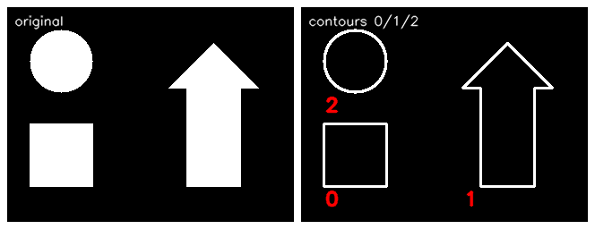
返回值 hierarchy（层次）。 图像内的轮廓可能存在嵌套：外部的轮廓称为父轮廓，其内部的轮廓称为子轮廓。轮廓之间的父子、先后关系称为层次（组织结构），hierarchy 就是这种关系的描述。每个轮廓 contours[i] 对应 4 个元素：
Next：后一个轮廓的索引编号；Previous：前一个轮廓的索引编号；First_Child：第 1 个子轮廓的索引编号；Parent：父轮廓的索引编号。
对应关系为空时记 -1。需要注意：轮廓的层次结构由参数 mode 决定——mode 不同，轮廓的编号、hierarchy 都不一样。hierarchy 的形状为 (1, 轮廓数, 4)。
参数 mode：4 种检索模式。 在同一幅构造图上实测四种模式（与原书示例的输出逐值一致）：
# ===== 12.1.1 四种检索模式的 hierarchy =====
img = hole_img()[:, :, 0] # 取 BGR 图第 0 个通道当灰度图
ret, binary = cv2.threshold(img, 127, 255, cv2.THRESH_BINARY)
for name, mode in [('RETR_EXTERNAL', cv2.RETR_EXTERNAL), # 只检测外轮廓
('RETR_LIST', cv2.RETR_LIST), # 不建立等级关系
('RETR_CCOMP', cv2.RETR_CCOMP), # 组织成两级层次
('RETR_TREE', cv2.RETR_TREE)]: # 建立等级树
c, h = cv2.findContours(binary, mode, cv2.CHAIN_APPROX_SIMPLE)
print(name, '轮廓数 =', len(c))
print(h)
RETR_EXTERNAL 轮廓数 = 2 hierarchy =
[[[ 1 -1 -1 -1]
[-1 0 -1 -1]]]
RETR_LIST 轮廓数 = 3 hierarchy =
[[[ 1 -1 -1 -1]
[ 2 0 -1 -1]
[-1 1 -1 -1]]]
RETR_CCOMP 轮廓数 = 3 hierarchy =
[[[ 1 -1 -1 -1]
[-1 0 2 -1]
[-1 -1 -1 1]]]
RETR_TREE 轮廓数 = 3 hierarchy =
[[[ 1 -1 -1 -1]
[-1 0 2 -1]
[-1 -1 -1 1]]]
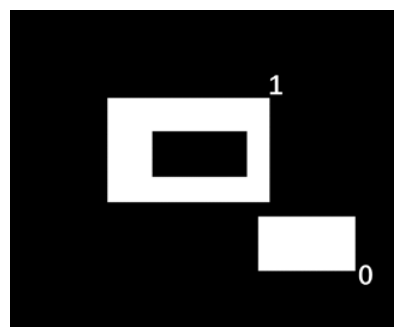
cv2.RETR_EXTERNAL（只检测外轮廓）：图 12.2 中带孔矩形只剩外边界（编号 1）、独立小矩形（编号 0），孔的边界被丢弃。hierarchy里只有 Next/Previous 有值：轮廓 0 的下一个是 1，轮廓 1 的前一个是 0，父子列全为 -1。cv2.RETR_LIST（不建立等级关系）：检测全部 3 条轮廓，但不建立父子关系——所有轮廓的 First_Child 与 Parent 都是 -1，只有 Next/Previous 把 3 条轮廓串成一条链。
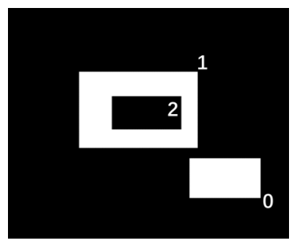
cv2.RETR_CCOMP（两级层次）：所有轮廓组织成两层——上层为外部边界，下层为内孔边界。实测中轮廓 1（矩形外边界）的 First_Child 为 2，轮廓 2（孔边界）的 Parent 为 1；若孔内还有物体，该物体边界仍归顶层。cv2.RETR_TREE（等级树）：按嵌套关系建立完整的等级树。本例只有两层嵌套，所以RETR_CCOMP与RETR_TREE的输出一致；多层嵌套时二者不同——RETR_CCOMP始终压成两层，RETR_TREE会展开成多层。
四种模式在同一幅构造图上检索出的轮廓编号对比（层次数值即上面的实测输出）：
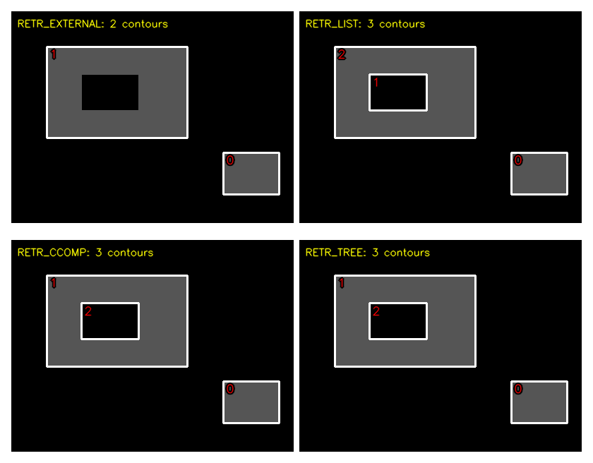
参数 method：4 种近似方法。
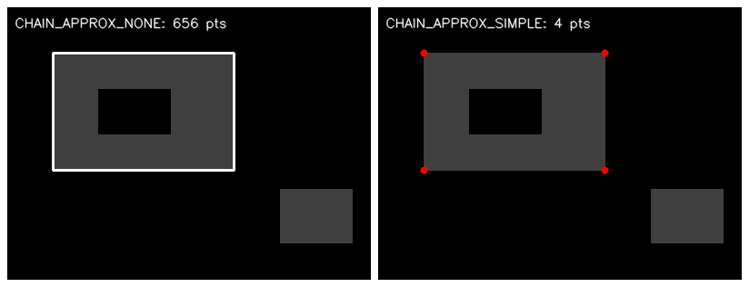
cv2.CHAIN_APPROX_NONE：存储所有轮廓点，相邻两点的位置差不超过 1 个像素，即 max(abs(x1−x2), abs(y1−y2)) = 1；cv2.CHAIN_APPROX_SIMPLE：压缩水平、垂直、对角方向的冗余点，只保留该方向的端点坐标。极端情况下一个矩形只需 4 个点；cv2.CHAIN_APPROX_TC89_L1：teh-Chin 链近似算法的一种风格；cv2.CHAIN_APPROX_TC89_KCOS：teh-Chin 链近似算法的另一种风格。
实测两种方法的点数（RETR_EXTERNAL 下只剩小矩形与大矩形外边界两条轮廓）：
# ===== 12.1.1 两种近似方法的点数对比 =====
cn, _ = cv2.findContours(binary, cv2.RETR_EXTERNAL, cv2.CHAIN_APPROX_NONE) # 存所有点
cp, _ = cv2.findContours(binary, cv2.RETR_EXTERNAL, cv2.CHAIN_APPROX_SIMPLE) # 压缩
print('NONE 各轮廓点数 =', [len(c) for c in cn])
print('SIMPLE 各轮廓点数 =', [len(c) for c in cp])
小矩形边长 80×60，沿边界走一圈 276 步（\(2 \times 79 + 2 \times 59\)）；大矩形边长 200×130，走一圈 656 步（\(2 \times 199 + 2 \times 129\)）。CHAIN_APPROX_NONE 把这些步全部记下来，CHAIN_APPROX_SIMPLE 则压缩成 4 个角点。
查找轮廓的注意事项：
- 源图像必须是 8 位单通道二值图，通常先做阈值分割或边缘检测；
- OpenCV 从黑色背景中查找白色对象——对象必须是白色、背景必须是黑色；
- OpenCV 4.x 中
cv2.findContours()只有contours, hierarchy两个返回值。
12.1.2 绘制图像轮廓：drawContours 函数#
image = cv2.drawContours(image, contours, contourIdx, color
[, thickness[, lineType[, hierarchy[, maxLevel[, offset]]]]])
image：待绘制轮廓的图像。该函数直接在 image 上绘制，函数执行后 image 不再是原图——若原图还有其他用途，必须先copy()一份副本传入。参数 image 与返回值 image 是同一幅图，因此也可以写成无返回值的形式。contours：需要绘制的轮廓，类型与findContours的输出contours相同。contourIdx：要绘制的轮廓索引。整数表示绘制对应索引的那一条；负数（通常写 -1）表示绘制全部轮廓。color：绘制颜色，BGR 格式。thickness：画笔粗细（可选）。设置为 -1 时绘制实心轮廓（填充）。lineType：线型（可选）。hierarchy：findContours输出的层次信息（可选）。maxLevel：控制绘制层次深度（可选）。0 表示只绘制第 0 层；非零正数表示绘制最高层及以下相同数量的层级。需要与hierarchy参数配合使用。offset：轮廓偏移量，把轮廓画到偏移后的位置上。
12.1.3 轮廓实例#
原书本章例题都从素材图读取对象；本节起直接调用 12.1 节开头定义的构造函数。
【例 12.1】绘制一幅图像内的所有轮廓：contourIdx 传 -1。
# ===== 例 12.1 绘制所有轮廓 =====
o = shapes_img() # 原书：o = cv2.imread('contours.bmp')
cv2.imshow("original", o)
gray = cv2.cvtColor(o, cv2.COLOR_BGR2GRAY)
ret, binary = cv2.threshold(gray, 127, 255, cv2.THRESH_BINARY)
contours, hierarchy = cv2.findContours(binary,
cv2.RETR_EXTERNAL, # 只检测外轮廓
cv2.CHAIN_APPROX_SIMPLE)
for i, c in enumerate(contours): # 看看每条轮廓在哪
print('轮廓%d boundingRect=%s 点数=%d' % (i, cv2.boundingRect(c), len(c)))
o = cv2.drawContours(o, contours, -1, (0, 0, 255), 5) # -1 绘制全部，红色，粗细 5
cv2.imshow("result", o)
cv2.waitKey()
cv2.destroyAllWindows()
实测输出：
轮廓0 boundingRect=(25, 130, 71, 71) 点数=4
轮廓1 boundingRect=(180, 40, 101, 161) 点数=9
轮廓2 boundingRect=(25, 25, 71, 71) 点数=100
三个对象提取出 3 条外轮廓。注意编号顺序：下方的方块反而是 contours[0]，上方的圆是 contours[2]——轮廓编号由算法内部扫描顺序决定，不按"从上到下、从左到右"排列，定位特定轮廓时先打印 boundingRect 核对再使用索引。
【例 12.2】逐个显示一幅图像内的边缘信息：循环把 contourIdx 依次设为 0, 1, 2, …。
# ===== 例 12.2 逐个显示轮廓 =====
o = shapes_img() # 原书：contours.bmp
gray = cv2.cvtColor(o, cv2.COLOR_BGR2GRAY)
ret, binary = cv2.threshold(gray, 127, 255, cv2.THRESH_BINARY)
contours, hierarchy = cv2.findContours(binary,
cv2.RETR_EXTERNAL,
cv2.CHAIN_APPROX_SIMPLE)
n = len(contours)
contoursImg = []
for i in range(n):
temp = np.zeros(o.shape, np.uint8) # 每条轮廓配一张黑底画布
contoursImg.append(temp)
contoursImg[i] = cv2.drawContours(contoursImg[i], contours, i, # 只画第 i 条
(255, 255, 255), 5)
cv2.imshow("contours[" + str(i) + "]", contoursImg[i])
cv2.waitKey()
cv2.destroyAllWindows()
运行后每个窗口只有一条白色轮廓。为方便在纸质书上观察，原书把轮廓画成白色 (255,255,255)。
【例 12.3】提取前景对象：thickness=-1 绘制实心轮廓得到掩模，再与原图"按位与"。
# ===== 例 12.3 用实心轮廓提取前景 =====
o = shapes_img() # 原书：o = cv2.imread('loc3.jpg')（小花照片）
cv2.imshow("original", o)
gray = cv2.cvtColor(o, cv2.COLOR_BGR2GRAY)
ret, binary = cv2.threshold(gray, 127, 255, cv2.THRESH_BINARY)
contours, hierarchy = cv2.findContours(binary,
cv2.RETR_LIST,
cv2.CHAIN_APPROX_SIMPLE)
mask = np.zeros(o.shape, np.uint8) # 与原图同大小的黑底掩模
mask = cv2.drawContours(mask, contours, -1, (255, 255, 255), -1) # thickness=-1：实心
cv2.imshow("mask", mask)
loc = cv2.bitwise_and(o, mask) # 按位与：掩模外全黑，掩模内保留原像素
cv2.imshow("location", loc)
cv2.waitKey()
cv2.destroyAllWindows()
实心轮廓 mask 是一幅"对象白、背景黑"的二值掩模；bitwise_and 把掩模外的像素全部清零，掩模内的像素原样保留，前景对象就被抠了出来。
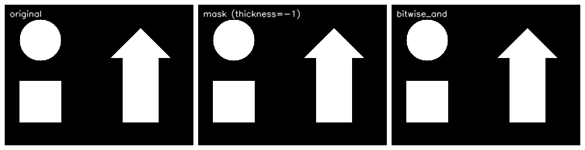
12.2 矩特征#
比较两个轮廓最简单的方法是比较二者的轮廓矩。轮廓矩代表一个轮廓、一幅图像、一组点集的全局特征，包含大小、位置、角度、形状等几何信息，被广泛应用于模式识别、图像识别等领域。
12.2.1 矩的计算：moments 函数#
array：可以是点集（轮廓），也可以是灰度图像或二值图像。当array是点集时，函数把这些点当成轮廓的顶点、把整个点集当作一条闭合轮廓，而不是独立的散点。binaryImage：为 True 时，array内所有非零值都被处理为 1。仅当array是图像时有效。retval：矩特征字典，共 24 个字段。
返回的矩分三类：
| 类别 | 字段 | 说明 |
|---|---|---|
| 空间矩（spatial moments） | m00；m10, m01；m20, m11, m02；m30, m21, m12, m03 |
零阶 1 个、一阶 2 个、二阶 3 个、三阶 4 个 |
| 中心矩（central moments） | mu20, mu11, mu02；mu30, mu21, mu12, mu03 |
二阶 3 个、三阶 4 个 |
| 归一化中心矩（normalized central moments） | nu20, nu11, nu02；nu30, nu21, nu12, nu03 |
二阶 3 个、三阶 4 个 |
大多数矩是通过公式计算的抽象特征，但零阶矩 m00 含义直观——它就是轮廓的面积。三个层次逐级解决"比较不同对象"的问题：
- 空间矩：两个轮廓的矩一致，两个轮廓就一致。位置变化时面积、周长等低阶特征不变，但高阶特征（如
m10）会跟着位置变，无法直接比较不同位置的对象； - 中心矩：通过减去均值获得平移不变性，可以比较不同位置的两个对象；但形状相同、大小不同的对象中心矩仍有差异；
- 归一化中心矩：通过除以物体总尺寸获得缩放不变性，既平移不变也缩放不变。
【例 12.4】提取一幅图像内各个轮廓的矩。
# ===== 例 12.4 观察各轮廓的矩 =====
o = shapes_img() # 原书：moments.bmp
cv2.imshow("original", o)
gray = cv2.cvtColor(o, cv2.COLOR_BGR2GRAY)
ret, binary = cv2.threshold(gray, 127, 255, cv2.THRESH_BINARY)
contours, hierarchy = cv2.findContours(binary, cv2.RETR_LIST,
cv2.CHAIN_APPROX_SIMPLE)
n = len(contours)
for i in range(n):
m = cv2.moments(contours[i]) # 第 i 条轮廓的矩
print('轮廓%d: m00=%.1f m10=%.1f mu20=%.2f nu20=%.6f nu02=%.6f'
% (i, m['m00'], m['m10'], m['mu20'], m['nu20'], m['nu02']))
print('各轮廓面积（m00）:')
for i in range(n):
print('轮廓%d 的面积:%d' % (i, cv2.moments(contours[i])['m00']))
cv2.waitKey()
cv2.destroyAllWindows()
实测输出：
轮廓0: m00=4900.0 m10=294000.0 mu20=2000833.33 nu20=0.083333 nu02=0.083333
轮廓1: m00=9101.0 m10=2093230.0 mu20=3022586.83 nu20=0.036492 nu02=0.196988
轮廓2: m00=3754.0 m10=225240.0 mu20=1121682.33 nu20=0.079594 nu02=0.079594
观察各个轮廓的面积:
轮廓0 的面积:4900
轮廓1 的面积:9101
轮廓2 的面积:3754
每条轮廓各有一套矩。轮廓 0（方块）与轮廓 2（圆）的 nu20 与 nu02 相等——左右对称的对象两个方向的归一化二阶中心矩必然相同；轮廓 1（箭头）上下不对称，nu20 ≠ nu02。
拓展：m00 与质心都能手算验证
对 12.1 节那个 100×60 的实心矩形（边界像素从 (20,30) 到 (119,89)），实测 m00 = contourArea = 5841.0（差为 0.0，两者逐位相等）；质心 m10/m00 = 69.50、m01/m00 = 59.50，正好是边界多边形的几何中心 \((20+99/2,\ 30+59/2)\)。二阶中心矩也有闭式解：均匀矩形 \(\mu_{20} = \frac{W^3 H}{12}\)，代入 \(W=99, H=59\) 得 4 770 636.75，与实测 mu20 完全一致；对称对象 mu11 ≈ 0（实测 3.7e-9）。
12.2.2 计算轮廓的面积：contourArea 函数#
contour：轮廓。oriented：布尔值。为 True 时返回值带正负号，表示轮廓点是顺时针还是逆时针排列；默认 False，返回绝对值。retval：面积。
【例 12.5】计算各个轮廓的面积。
# ===== 例 12.5 计算面积 =====
o = shapes_img() # 原书：contours.bmp
gray = cv2.cvtColor(o, cv2.COLOR_BGR2GRAY)
ret, binary = cv2.threshold(gray, 127, 255, cv2.THRESH_BINARY)
contours, hierarchy = cv2.findContours(binary, cv2.RETR_LIST,
cv2.CHAIN_APPROX_SIMPLE)
cv2.imshow("original", o)
n = len(contours)
contoursImg = []
for i in range(n):
print("contours[" + str(i) + "]面积=", cv2.contourArea(contours[i]))
temp = np.zeros(o.shape, np.uint8)
contoursImg.append(temp)
contoursImg[i] = cv2.drawContours(contoursImg[i], contours, i,
(255, 255, 255), 3)
cv2.imshow("contours[" + str(i) + "]", contoursImg[i])
cv2.waitKey()
cv2.destroyAllWindows()
实测输出：
方块实测 4900 = \(70 \times 70\)——71×71 像素的方块，边界多边形是 70×70（见下面的拓展）；圆实测 3754，略小于理想值 \(\pi \times 35^2 \approx 3848\)（多边形逼近圆）。这些值与例 12.4 的 m00 完全相同。
拓展：面积是边界多边形的面积，不是像素计数
contourArea（及 m00）按轮廓点围成的多边形（Green 公式）计算。100×60 的实心矩形有 6000 个像素，但轮廓点落在边界像素坐标上，围出的多边形是 (100−1)×(60−1) = 5841；71×71 的方块同理是 70×70 = 4900。做"面积筛选"这类相对比较时两种口径都够用，但与手算像素个数对照时要记住差一圈边界。
【例 12.6】筛选面积大于阈值的轮廓。
# ===== 例 12.6 按面积筛选轮廓 =====
o = shapes_img() # 原书：contours.bmp，阈值 15000
cv2.imshow("original", o)
gray = cv2.cvtColor(o, cv2.COLOR_BGR2GRAY)
ret, binary = cv2.threshold(gray, 127, 255, cv2.THRESH_BINARY)
contours, hierarchy = cv2.findContours(binary, cv2.RETR_LIST,
cv2.CHAIN_APPROX_SIMPLE)
n = len(contours)
contoursImg = []
for i in range(n):
temp = np.zeros(o.shape, np.uint8)
contoursImg.append(temp)
contoursImg[i] = cv2.drawContours(contoursImg[i], contours, i,
(255, 255, 255), 3)
if cv2.contourArea(contours[i]) > 5000: # 面积大于 5000 才显示
cv2.imshow("contours[" + str(i) + "]", contoursImg[i])
cv2.waitKey()
cv2.destroyAllWindows()
实测三条面积 4900、9101、3754 中只有轮廓 1（箭头，9101）超过 5000，仅它被显示——这就是"按面积筛掉小噪声"的标准写法。
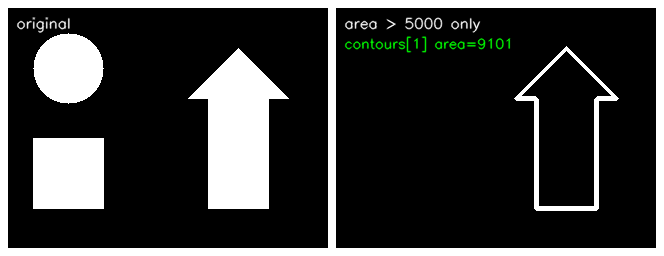
12.2.3 计算轮廓的长度：arcLength 函数#
curve：轮廓。closed：布尔值，True 表示轮廓是封闭的。retval：轮廓的长度（周长）。
【例 12.7】显示长度大于平均值的轮廓。
# ===== 例 12.7 按周长筛选轮廓 =====
# ---------- 读取及显示原始图像 ----------
o = hole_img() # 原书：contours0.bmp（10 条轮廓）
cv2.imshow("original", o)
# ---------- 获取轮廓 ----------
gray = cv2.cvtColor(o, cv2.COLOR_BGR2GRAY)
ret, binary = cv2.threshold(gray, 127, 255, cv2.THRESH_BINARY)
contours, hierarchy = cv2.findContours(binary, cv2.RETR_LIST,
cv2.CHAIN_APPROX_SIMPLE)
# ---------- 计算各轮廓长度之和、平均长度 ----------
n = len(contours)
cntLen = [] # 存储各轮廓的长度
for i in range(n):
cntLen.append(cv2.arcLength(contours[i], True)) # True：封闭曲线
print("第" + str(i) + "个轮廓的长度:%.1f" % cntLen[i])
cntLenSum = np.sum(cntLen) # 长度之和
cntLenAvr = cntLenSum / n # 平均长度
print("轮廓的总长度为：%.1f" % cntLenSum)
print("轮廓的平均长度为：%.2f" % cntLenAvr)
# ---------- 显示长度超过平均值的轮廓 ----------
contoursImg = []
for i in range(n):
temp = np.zeros(o.shape, np.uint8)
contoursImg.append(temp)
contoursImg[i] = cv2.drawContours(contoursImg[i], contours, i,
(255, 255, 255), 3)
if cv2.arcLength(contours[i], True) > cntLenAvr:
cv2.imshow("contours[" + str(i) + "]", contoursImg[i])
cv2.waitKey()
cv2.destroyAllWindows()
实测输出：
平均长度 397.89，只有第 2 条轮廓（大矩形外边界，656）超过平均值，被显示出来。周长同样可以手算核对：小矩形 276 = \(2 \times 79 + 2 \times 59\)；大矩形 656 = \(2 \times 199 + 2 \times 129\)。
拓展：261.7 的零头来自角上的斜切
第 1 条轮廓是孔的边界。挖孔时光栅化让孔的四个角出现 1 像素的 45° 切角，实际轮廓是 8 个点的"八角形"：四条直边 \(79+79+49+49 = 256\)，加四个 \(\sqrt{2}\) 的斜边共 5.66，合计 261.66 ≈ 261.7。斜向步进也是 CHAIN_APPROX_NONE 里"相邻点坐标差不超过 1"的来源。
12.3 Hu 矩#
Hu 矩是归一化中心矩的线性组合。图像经过旋转、缩放、平移后 Hu 矩仍能保持不变，因此经常用 Hu 矩识别图像特征。在 OpenCV 中，函数 cv2.HuMoments() 以 cv2.moments() 的返回值为参数，返回 7 个 Hu 矩值。
原书笔误：Hu 距 应为 Hu 矩
原书 12.3 节正文两处写"使用 Hu 距来识别图像的特征""可以得到 Hu 距"，均为"Hu 矩"之误；同节"归一化中心距"也应为"归一化中心矩"。
12.3.1 Hu 矩函数#
m：cv2.moments()计算得到的矩特征值。hu：返回的 7 个 Hu 矩值。
为表述方便，记归一化中心矩 \(\nu_{20}, \nu_{11}, \nu_{02}, \nu_{30}, \nu_{21}, \nu_{12}, \nu_{03}\)，7 个 Hu 矩为：
原书笔误：h4 与 h6 的公式
在矩形 + 圆的构造图上把原书公式与 cv2.HuMoments 的输出逐一对照：h0～h3、h5 与实测逐位一致，h4、h6 不一致。h4 第一个方括号原书写作 \((\nu_{30} - 3\nu_{12})^2 - 3(\nu_{21} + \nu_{03})^2\)，应为 \((\nu_{30} + \nu_{12})^2 - 3(\nu_{21} + \nu_{03})^2\)（改正后与 OpenCV 输出差为 0）。h6 的第一项原书把第二因子写作 \((\nu_{21} + \nu_{03})\)、方括号写作 \(3(\nu_{30}+\nu_{12})^2 - (\nu_{21}+\nu_{03})^2\)，而 OpenCV 实际采用的是 \(h_6\) 上面的形式（与 Hu 1962 年原始论文一致）。另外原书例 12.8 输出中的"𝑛𝑛20"是"𝑛𝑢20"的排印错误。
【例 12.8】验证第 0 个 Hu 矩的关系 \(h_0 = \nu_{20} + \nu_{02}\)。
# ===== 例 12.8 验证 h0 = nu20 + nu02 =====
import cv2
o1 = shapes_img()
gray = cv2.cvtColor(o1, cv2.COLOR_BGR2GRAY) # 原书直接对灰度图求矩
HuM1 = cv2.HuMoments(cv2.moments(gray)).flatten() # flatten() 展开成 7 个元素的数组
print("nu20 =", cv2.moments(gray)['nu20'])
print("nu02 =", cv2.moments(gray)['nu02'])
print("nu20+nu02 =", cv2.moments(gray)['nu20'] + cv2.moments(gray)['nu02'])
print("HuM1[0] =", HuM1[0])
print("Hu[0]-(nu02+nu20) =",
HuM1[0] - (cv2.moments(gray)['nu20'] + cv2.moments(gray)['nu02']))
实测输出：
nu20 = 0.0016325130112603734
nu02 = 0.0005252620274657183
nu20+nu02 = 0.0021577750387260916
HuM1[0] = 0.0021577750387260916
Hu[0]-(nu02+nu20) = 0.0
差值为 0，关系成立。注意这里 cv2.moments() 的参数是灰度图像而不是轮廓——两种用法都合法。
【例 12.9】计算三幅不同图像的 Hu 矩并比较。
# ===== 例 12.9 三幅图的 Hu 矩比较 =====
import cv2
g1 = quad_img((100, 100))[:, :, 0] # 四边形
g2 = cv2.resize(quad_img(), None, fx=2, fy=2,
interpolation=cv2.INTER_NEAREST)[:, :, 0] # 放大 2 倍并移位
g3 = circ_img()[:, :, 0] # 圆
HuM1 = cv2.HuMoments(cv2.moments(g1)).flatten()
HuM2 = cv2.HuMoments(cv2.moments(g2)).flatten()
HuM3 = cv2.HuMoments(cv2.moments(g3)).flatten()
print("HuM1[:3] =", HuM1[:3])
print("HuM2[:3] =", HuM2[:3])
print("HuM3[:3] =", HuM3[:3])
print("HuM1-HuM2[:3] =", HuM1[:3] - HuM2[:3])
print("HuM1-HuM3[:3] =", HuM1[:3] - HuM3[:3])
实测输出：
HuM1[:3] = [7.35744909e-04 1.14128441e-07 2.68209378e-18]
HuM2[:3] = [7.35817412e-04 1.14128441e-07 2.68209376e-18]
HuM3[:3] = [0.00062414 0. 0. ]
HuM1-HuM2[:3] = [-7.25034874e-08 -2.64697796e-23 1.89666444e-26]
HuM1-HuM3[:3] = [1.11601237e-04 1.14128441e-07 2.68209378e-18]
同一形状放大 2 倍再平移（g1 与 g2），前 3 个 Hu 矩的相对差仅约 0.01%；与形状完全不同的圆（g3）相比则差出 3 个数量级。Hu 矩的值本身非常小（常见 10⁻³ ～ 10⁻¹⁸），直接看差值意义有限，实际比较用 12.3.2 的 matchShapes 更方便。
拓展：平移与缩放不变性的量级
对同一形状做纯平移，Hu 矩的相对差实测在 10⁻¹⁴ 量级（浮点误差水平）；放大 2 倍后主不变量 h0 的相对差实测约 5.8×10⁻⁵（光栅化误差）。旋转、缩放、平移"不变"指的是这个意义上的近似不变。
12.3.2 形状匹配#
为了更直观地比较 Hu 矩，OpenCV 提供了 cv2.matchShapes()：提供两个对象（可以是轮廓，也可以是灰度图），函数内部先各自算好 Hu 矩再比较。
contour1、contour2：两个待比较的轮廓或灰度图像。method：比较方法，三种取值见下表。parameter：method 的扩展参数，目前不支持，固定填 0。retval：相似度值，越小说明两个对象越相似。
| 方法名称 | 含义 |
|---|---|
cv2.CONTOURS_MATCH_I1 |
按 \(\sum_{i=1\ldots 7} \left\lvert \frac{m_i^A - m_i^B}{m_i^A} \right\rvert\) 比较 |
cv2.CONTOURS_MATCH_I2 |
按 \(\sum_{i=1\ldots 7} \lvert m_i^A - m_i^B \rvert\) 比较 |
cv2.CONTOURS_MATCH_I3 |
按 \(\max_{i=1\ldots 7} \frac{\lvert m_i^A - m_i^B \rvert}{\lvert m_i^A \rvert}\) 比较 |
其中对象 A、B 的 \(m_i\) 由各自的 Hu 矩计算：
【例 12.10】计算三组对象的匹配度。
# ===== 例 12.10 matchShapes =====
import cv2
gray1 = cv2.cvtColor(quad_img((100, 100)), cv2.COLOR_BGR2GRAY) # 原形状
big = cv2.resize(quad_img(), None, fx=2, fy=2,
interpolation=cv2.INTER_NEAREST) # 放大 2 倍
gray2 = cv2.cvtColor(big, cv2.COLOR_BGR2GRAY) # 原书 cs2.bmp
gray3 = cv2.cvtColor(circ_img(), cv2.COLOR_BGR2GRAY) # 原书 cc.bmp
ret1, binary1 = cv2.threshold(gray1, 127, 255, cv2.THRESH_BINARY)
ret2, binary2 = cv2.threshold(gray2, 127, 255, cv2.THRESH_BINARY)
ret3, binary3 = cv2.threshold(gray3, 127, 255, cv2.THRESH_BINARY)
contours1, hierarchy = cv2.findContours(binary1, cv2.RETR_LIST,
cv2.CHAIN_APPROX_SIMPLE)
contours2, hierarchy = cv2.findContours(binary2, cv2.RETR_LIST,
cv2.CHAIN_APPROX_SIMPLE)
contours3, hierarchy = cv2.findContours(binary3, cv2.RETR_LIST,
cv2.CHAIN_APPROX_SIMPLE)
cnt1, cnt2, cnt3 = contours1[0], contours2[0], contours3[0]
print("相同图像的matchShape=", cv2.matchShapes(cnt1, cnt1, 1, 0.0))
print("相似图像的matchShape=", cv2.matchShapes(cnt1, cnt2, 1, 0.0))
print("不相似图像的matchShape=", cv2.matchShapes(cnt1, cnt3, 1, 0.0))
实测输出：
- 同一幅图像的 Hu 矩不变，差值为 0；
- 相似图像即使经过平移、旋转和缩放，返回值仍然很小（0.002）；
- 不相似图像的返回值大得多（0.125）。
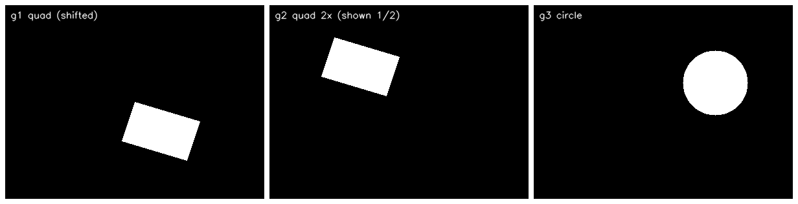
12.4 轮廓拟合#
计算轮廓时，可能并不需要实际的轮廓点，而只需要一个接近轮廓的近似对象（矩形、圆、椭圆、直线、三角形、多边形）。OpenCV 为每种拟合都提供了专门函数。本节部分程序用到了绘图函数（rectangle、circle、ellipse、line、polylines），详见第 19 章。
12.4.1 矩形包围框#
retval：矩形边界左上角顶点坐标及宽、高。也可以写成 4 个返回值的形式：
x、y 是左上角顶点坐标，w、h 是矩形边界 x、y 方向的长度。参数 array 是灰度图像或轮廓。
【例 12.11】观察两种返回值形式。
# ===== 例 12.11 boundingRect 的两种返回形式 =====
import cv2
o = quad_img() # 原书：cc.bmp
gray = cv2.cvtColor(o, cv2.COLOR_BGR2GRAY)
ret, binary = cv2.threshold(gray, 127, 255, cv2.THRESH_BINARY)
contours, hierarchy = cv2.findContours(binary, cv2.RETR_LIST,
cv2.CHAIN_APPROX_SIMPLE)
x, y, w, h = cv2.boundingRect(contours[0]) # 四个返回值形式
print("x=", x); print("y=", y); print("w=", w); print("h=", h)
rect = cv2.boundingRect(contours[0]) # 单个返回值形式
print("rect=", rect)
实测输出：
斜四边形顶点横跨 80～200、纵跨 50～140，包围框 121×91 正好把斜边也框进去。
【例 12.12】用 drawContours 绘制矩形包围框：自己构造 4 个角点。
# ===== 例 12.12 drawContours 画包围框 =====
import cv2
import numpy as np
o = quad_img()
cv2.imshow("original", o)
gray = cv2.cvtColor(o, cv2.COLOR_BGR2GRAY)
ret, binary = cv2.threshold(gray, 127, 255, cv2.THRESH_BINARY)
contours, hierarchy = cv2.findContours(binary, cv2.RETR_LIST,
cv2.CHAIN_APPROX_SIMPLE)
x, y, w, h = cv2.boundingRect(contours[0])
brcnt = np.array([[[x, y]], [[x+w, y]], [[x+w, y+h]], [[x, y+h]]]) # 四个角点
cv2.drawContours(o, [brcnt], -1, (255, 255, 255), 2) # 当成轮廓画出来
cv2.imshow("result", o)
cv2.waitKey()
cv2.destroyAllWindows()
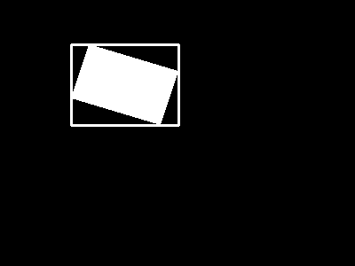
【例 12.13】用 cv2.rectangle() 绘制：更简单，直接给左上、右下两个角点。
# ===== 例 12.13 cv2.rectangle 画包围框 =====
import cv2
o = quad_img()
cv2.imshow("original", o)
gray = cv2.cvtColor(o, cv2.COLOR_BGR2GRAY)
ret, binary = cv2.threshold(gray, 127, 255, cv2.THRESH_BINARY)
contours, hierarchy = cv2.findContours(binary, cv2.RETR_LIST,
cv2.CHAIN_APPROX_SIMPLE)
x, y, w, h = cv2.boundingRect(contours[0])
cv2.rectangle(o, (x, y), (x+w, y+h), (255, 255, 255), 2) # 左上角与右下角
cv2.imshow("result", o)
cv2.waitKey()
cv2.destroyAllWindows()
12.4.2 最小包围矩形框#
cv2.boundingRect() 得到的包围框是正置的（边与坐标轴平行）；cv2.minAreaRect() 求的是面积最小的旋转矩形。
retval：矩形特征信息，结构为（最小外接矩形的中心 (x,y)，(宽度,高度)，旋转角度）。points：轮廓。
返回值结构不符合 drawContours 的参数要求，必须先用 cv2.boxPoints() 转换：
box：minAreaRect类型的返回值。points：能直接用作drawContours参数的 4 个轮廓点。
【例 12.14】计算最小包围矩形框。
# ===== 例 12.14 minAreaRect 与 boxPoints =====
import cv2
import numpy as np
o = quad_img()
cv2.imshow("original", o)
gray = cv2.cvtColor(o, cv2.COLOR_BGR2GRAY)
ret, binary = cv2.threshold(gray, 127, 255, cv2.THRESH_BINARY)
contours, hierarchy = cv2.findContours(binary, cv2.RETR_LIST,
cv2.CHAIN_APPROX_SIMPLE)
rect = cv2.minAreaRect(contours[0])
print("返回值rect:\n", rect)
points = cv2.boxPoints(rect) # 转成 4 个角点
print("转换后的points：\n", points)
points = np.round(points).astype(np.int32) # 原书：np.int0(points)，NumPy 2.0 已删除
image = cv2.drawContours(o, [points], 0, (255, 255, 255), 2)
cv2.imshow("result", o)
cv2.waitKey()
cv2.destroyAllWindows()
原书写法已失效：np.int0
原书例 12.14 用 points = np.int0(points) 取整。np.int0 在 NumPy 2.0 中已被移除，会报 AttributeError。改用 points = np.round(points).astype(np.int32)。
实测输出：
返回值rect:
((140.01376342773438, 94.95413208007812), (64.07858276367188, 106.89342498779297), -73.3007583618164)
转换后的points：
[[182.00002 141. ]
[ 79.61467 110.28441 ]
[ 98.02751 48.908264]
[200.41286 79.623856]]
取整后：
[[182 141]
[ 80 110]
[ 98 49]
[200 80]]
- 中心 (140.01, 94.95) 就是四个顶点的几何中心 \((140, 95)\)；
- 尺寸 (64.08, 106.89) 对应四边形两条邻边的长度（手算 \(\sqrt{20^2+60^2} \approx 63.25\)、\(\sqrt{100^2+30^2} \approx 104.4\)，轮廓点含边界像素略大）；
- 取整后的 4 个角点与构造四边形时给的顶点一一对应。
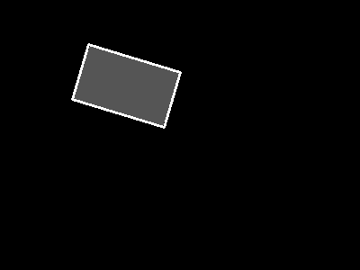
拓展：旋转角度的版本差异
旋转角度的取值范围在不同 OpenCV 版本间有过变化（4.5 之前在 \([-90, 0)\)，4.5 曾改为 \((0, 90]\)，各发行版又有差异）。写跨版本代码时不要依赖角度的符号约定，需要角点就直接用 boxPoints。
12.4.3 最小包围圆形#
center：最小包围圆形的中心；radius：半径。points：轮廓。函数通过迭代算法构造面积最小的包围圆。
【例 12.15】构造最小包围圆形。
# ===== 例 12.15 minEnclosingCircle =====
import cv2
o = circ_img() # 原书：cc.bmp
cv2.imshow("original", o)
gray = cv2.cvtColor(o, cv2.COLOR_BGR2GRAY)
ret, binary = cv2.threshold(gray, 127, 255, cv2.THRESH_BINARY)
contours, hierarchy = cv2.findContours(binary, cv2.RETR_LIST,
cv2.CHAIN_APPROX_SIMPLE)
(x, y), radius = cv2.minEnclosingCircle(contours[0]) # 返回浮点数
center = (int(x), int(y)) # 绘图前取整
radius = int(radius)
cv2.circle(o, center, radius, (255, 255, 255), 2) # 画圆
cv2.imshow("result", o)
cv2.waitKey()
cv2.destroyAllWindows()
实测：(x, y) = (280.0000, 120.0000)、radius = 50.0001——圆轮廓的包围圆就是它自己（圆心 (280,120)、半径 50）。
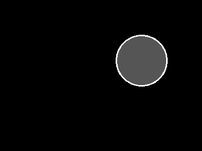
12.4.4 最优拟合椭圆#
retval：RotatedRect 类型的返回值——拟合椭圆的外接矩形，其中心点、宽高、旋转角度正好对应椭圆的中心、轴长、旋转角度。points：轮廓。
轮廓至少要有 5 个点
fitEllipse 要求输入至少 5 个点。直边矩形的轮廓用 CHAIN_APPROX_SIMPLE 压缩后只剩 4 个角点，传入会报错 error: (-201:Incorrect size of input array) There should be at least 5 points to fit the ellipse。改用 CHAIN_APPROX_NONE 获取完整轮廓即可。
【例 12.16】构造最优拟合椭圆。
# ===== 例 12.16 fitEllipse =====
import cv2
o = quad_img()
gray = cv2.cvtColor(o, cv2.COLOR_BGR2GRAY)
ret, binary = cv2.threshold(gray, 127, 255, cv2.THRESH_BINARY)
contours, hierarchy = cv2.findContours(binary, cv2.RETR_LIST,
cv2.CHAIN_APPROX_SIMPLE)
cv2.imshow("original", o)
ellipse = cv2.fitEllipse(contours[0])
print("ellipse=", ellipse)
cv2.ellipse(o, ellipse, (0, 255, 0), 3) # 按 fitEllipse 的返回值画椭圆
cv2.imshow("result", o)
cv2.waitKey()
cv2.destroyAllWindows()
实测输出：
ellipse= ((140.06163024902344, 94.97840118408203), (73.40412902832031, 128.23939514160156), 105.84986114501953)
- (140.06, 94.98)：椭圆中心（≈ 四边形质心）；
- (73.40, 128.24)：轴长度；
- 105.85：旋转角度。
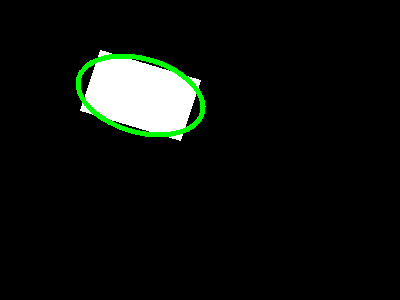
12.4.5 最优拟合直线#
points：轮廓。distType：距离类型。拟合要使输入点到拟合直线的距离之和最小，距离如何度量由该参数决定，见表 12-2。param：距离参数，与所选距离类型有关，设 0 时函数自动选择最优值。reps：径向精度，通常 0.01。aeps：角度精度，通常 0.01。line：返回的最优拟合直线参数，形式为 \([v_x, v_y, x, y]\)——单位方向向量与直线上一点。
表 12-2 距离类型（distType）
| 值 | 含义（以点 (x1,y1)、(x2,y2) 为例） |
|---|---|
cv2.DIST_USER |
用户自定义距离 |
cv2.DIST_L1 |
\(d = \lvert x_1 - x_2 \rvert + \lvert y_1 - y_2 \rvert\) |
cv2.DIST_L2 |
欧氏距离 |
cv2.DIST_C |
\(d = \max(\lvert x_1 - x_2 \rvert, \lvert y_1 - y_2 \rvert)\) |
cv2.DIST_L12 |
\(d = 2(\sqrt{1 + x^2/2} - 1)\) |
cv2.DIST_FAIR |
\(d = c^2(\lvert x \rvert / c - \log(1 + \lvert x \rvert / c)),\ c = 1.3998\) |
cv2.DIST_WELSCH |
\(d = \frac{c^2}{2}(1 - e^{-(x/c)^2}),\ c = 2.9846\) |
cv2.DIST_HUBER |
\(d = \lvert x \rvert < c\ ?\ x^2/2\ :\ c(\lvert x \rvert - c/2),\ c = 1.345\) |
【例 12.17】构造最优拟合直线并画到图像两端。
# ===== 例 12.17 fitLine =====
import cv2
o = quad_img()
cv2.imshow("original", o)
gray = cv2.cvtColor(o, cv2.COLOR_BGR2GRAY)
ret, binary = cv2.threshold(gray, 127, 255, cv2.THRESH_BINARY)
contours, hierarchy = cv2.findContours(binary, cv2.RETR_LIST,
cv2.CHAIN_APPROX_SIMPLE)
rows, cols = cv2.cvtColor(o, cv2.COLOR_BGR2GRAY).shape[:2] # 高、宽
[vx, vy, x, y] = cv2.fitLine(contours[0], cv2.DIST_L2, 0, 0.01, 0.01)
lefty = int((-x*vy/vx) + y) # 直线与左边界 x=0 的交点 y
righty = int(((cols-x)*vy/vx) + y) # 直线与右边界 x=cols 的交点 y
cv2.line(o, (cols-1, righty), (0, lefty), (0, 255, 0), 2)
cv2.imshow("result", o)
cv2.waitKey()
cv2.destroyAllWindows()
实测 [vx, vy, x, y] = [0.9645, 0.264, 140.10, 95.00]：方向向量 (0.9645, 0.264) 表示直线向右下方倾斜，过点 (140.10, 95.00)（≈ 质心）。lefty/righty 用点斜式把直线延拓到图像左右两条边界上，再整条画出。
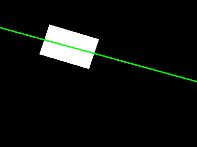
12.4.6 最小外包三角形#
retval：最小外包三角形的面积。triangle：最小外包三角形的三个顶点集。points：轮廓。
【例 12.18】构造最小外包三角形。
# ===== 例 12.18 minEnclosingTriangle =====
import cv2
o = quad_img()
cv2.imshow("original", o)
gray = cv2.cvtColor(o, cv2.COLOR_BGR2GRAY)
ret, binary = cv2.threshold(gray, 127, 255, cv2.THRESH_BINARY)
contours, hierarchy = cv2.findContours(binary, cv2.RETR_LIST,
cv2.CHAIN_APPROX_SIMPLE)
area, trgl = cv2.minEnclosingTriangle(contours[0])
print("area=", area)
print("trgl:", trgl)
for i in range(0, 3):
cv2.line(o, tuple(trgl[i][0].astype(int)), # 第 i 个顶点
tuple(trgl[(i + 1) % 3][0].astype(int)), # 下一个顶点，%3 让首尾相连
(255, 255, 255), 2)
cv2.imshow("result", o)
cv2.waitKey()
cv2.destroyAllWindows()
实测输出：
三个顶点连接时用 (i+1) % 3 让第 3 个顶点连回第 1 个，三角形才闭合。注意原书这里用 tuple(trgl[i][0]) 传入 cv2.line——trgl 是 float32，部分版本的绘图函数不接受浮点坐标，先 astype(int) 更稳。
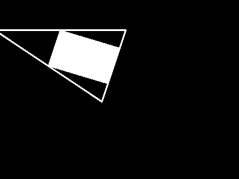
12.4.7 逼近多边形#
curve：轮廓。epsilon：精度——原始轮廓的边界点与逼近多边形边界之间的最大距离。closed：布尔值，True 时逼近多边形封闭。approxCurve：逼近多边形的点集。
函数采用 Douglas-Peucker 算法（DP 算法）：先找到轮廓上距离最远的两点并相连；再找离当前直线最远的点加入，构成封闭多边形；不断迭代"找最远点—加入"，直到轮廓上所有点到当前多边形的距离都小于 epsilon 为止。因此 epsilon 越小，多边形越贴近原轮廓。通常把 epsilon 设为轮廓周长的百分比（如 0.02*cv2.arcLength(cnt, True)）。
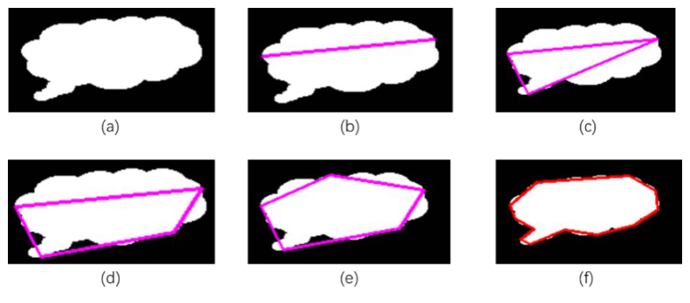
【例 12.19】用不同精度逼近同一轮廓。
# ===== 例 12.19 不同 epsilon 的逼近多边形 =====
import cv2
o = quad_img() # 原书：cc.bmp
cv2.imshow("original", o)
gray = cv2.cvtColor(o, cv2.COLOR_BGR2GRAY)
ret, binary = cv2.threshold(gray, 127, 255, cv2.THRESH_BINARY)
contours, hierarchy = cv2.findContours(binary, cv2.RETR_LIST,
cv2.CHAIN_APPROX_SIMPLE)
L = cv2.arcLength(contours[0], True) # 周长 361.42
print('原始轮廓点数 =', len(contours[0])) # 204
for k in [0.1, 0.09, 0.055, 0.05, 0.02, 0.01, 0.001]:
adp = o.copy() # drawContours 会改图，用副本
epsilon = k * cv2.arcLength(contours[0], True)
approx = cv2.approxPolyDP(contours[0], epsilon, True)
print('epsilon = %.3f*周长 → 顶点数 = %d' % (k, len(approx)))
adp = cv2.drawContours(adp, [approx], 0, (0, 0, 255), 2)
cv2.imshow("result" + str(k), adp)
cv2.waitKey()
cv2.destroyAllWindows()
实测输出：
原始轮廓点数 = 204
epsilon = 0.100*周长 → 顶点数 = 4
epsilon = 0.090*周长 → 顶点数 = 4
epsilon = 0.055*周长 → 顶点数 = 4
epsilon = 0.050*周长 → 顶点数 = 4
epsilon = 0.020*周长 → 顶点数 = 4
epsilon = 0.010*周长 → 顶点数 = 4
epsilon = 0.001*周长 → 顶点数 = 124
斜四边形轮廓有 204 个边界点（斜边不是 45°，SIMPLE 压不掉）。epsilon 取周长的 1% 以上时都收敛到 4 个顶点，且坐标就是构造时的四个顶点 [100,50] [200,80] [180,140] [80,110]；epsilon 降到 0.1% 才保留 124 个点。原书图像上更精细的 epsilon 依次呈现 3 → 4 → 5 → 更多顶点的渐进过程——epsilon 越小多边形越贴近原轮廓，也越失去"简化"的意义。
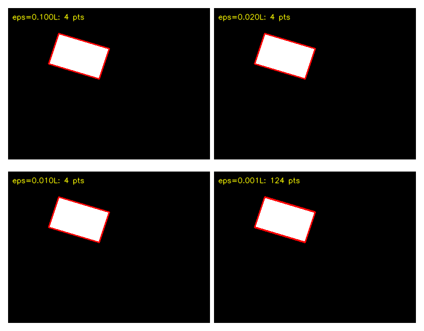
需要注意：本节示例处理的都是单轮廓图的 contours[0]。若原图有多个轮廓，要控制索引 contours[i] 指向特定轮廓。
12.5 凸包#
逼近多边形是轮廓的高度近似；有时更希望用一个凸包来简化它。凸包跟逼近多边形很像，但它是物体最外层的"凸"多边形：完全包含原有轮廓，且仅由轮廓上的点构成。凸包的每一处都是凸的——凸包内连接任意两点的线段都在凸包内部，任意连续三个点的内角小于 180°。
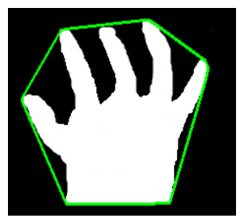
最外层凸多边形与轮廓之间的部分称为凸缺陷（Convexity Defect），可用于手势识别等问题（指缝就是典型的凸缺陷）。
12.5.1 获取凸包#
points：轮廓。clockwise：布尔值。True 时凸包角点按顺时针排列，False 按逆时针。returnPoints：布尔值，默认 True——返回凸包角点的 x/y 坐标；False 时返回轮廓中凸包角点的索引。hull：凸包角点。
【例 12.20】观察 returnPoints 的两种取值。
# ===== 例 12.20 returnPoints 两种取值 =====
import cv2
o = shapes_img() # 原书：contours.bmp
gray = cv2.cvtColor(o, cv2.COLOR_BGR2GRAY)
ret, binary = cv2.threshold(gray, 127, 255, cv2.THRESH_BINARY)
contours, hierarchy = cv2.findContours(binary, cv2.RETR_TREE,
cv2.CHAIN_APPROX_SIMPLE)
cnt = [c for c in contours if cv2.boundingRect(c) == (25, 130, 71, 71)][0] # 方块轮廓
hull = cv2.convexHull(cnt) # 默认 returnPoints=True：返回坐标
print("returnPoints 为默认值True时返回值hull的值：\n", hull)
hull2 = cv2.convexHull(cnt, returnPoints=False) # 返回索引
print("returnPoints 为False时返回值hull的值：\n", hull2)
实测输出：
returnPoints 为默认值True时返回值hull的值：
[[[ 95 130]]
[[ 95 200]]
[[ 25 200]]
[[ 25 130]]]
returnPoints 为False时返回值hull的值：
[[3]
[2]
[1]
[0]]
方块轮廓本身只有 4 个点，凸包就是这 4 个角点：True 返回坐标，False 返回这些点在轮廓中的索引 [3, 2, 1, 0]。索引形式是给 convexityDefects 用的（见 12.5.2）。
【例 12.21】获取轮廓的凸包并绘制。
# ===== 例 12.21 获取并绘制凸包 =====
import cv2
o = hand_img() # 原书：hand.bmp（手掌）
cv2.imshow("original", o)
gray = cv2.cvtColor(o, cv2.COLOR_BGR2GRAY)
ret, binary = cv2.threshold(gray, 127, 255, cv2.THRESH_BINARY)
contours, hierarchy = cv2.findContours(binary, cv2.RETR_LIST,
cv2.CHAIN_APPROX_SIMPLE)
hull = cv2.convexHull(contours[0]) # 得到凸包角点
print('凸包角点 =', hull.reshape(-1, 2).tolist())
cv2.polylines(o, [hull], True, (0, 255, 0), 2) # True：闭合折线
cv2.imshow("result", o)
cv2.waitKey()
cv2.destroyAllWindows()
实测输出：
凹口顶点 (150,150) 被排除在外——凸包只保留最外圈的 4 个角点，用 cv2.polylines() 把角点连成闭合折线。
12.5.2 凸缺陷#
凸包与轮廓之间的部分称为凸缺陷。OpenCV 用 cv2.convexityDefects() 获取：
contour：轮廓。convexhull：凸包。convexityDefects：凸缺陷点集，是一个数组，每行包含[起点，终点，轮廓上距离凸包最远的点，最远点到凸包的近似距离]。前三个值是轮廓点的索引，需要回到轮廓点集里取坐标。
凸包参数必须用 returnPoints=False 生成
cv2.convexityDefects() 的第二个参数要求是"角点索引"形式的凸包：查找凸包时必须写 cv2.convexHull(cnt, returnPoints=False)。传坐标形式的凸包会得到错误结果或报错。
【例 12.22】计算并显示凸缺陷：起点与终点连线，最远点画圆圈。
# ===== 例 12.22 凸缺陷 =====
import cv2
img = hand_img() # 原书：hand.bmp
cv2.imshow('original', img)
gray = cv2.cvtColor(img, cv2.COLOR_BGR2GRAY)
ret, binary = cv2.threshold(gray, 127, 255, 0) # 0 等价于 cv2.THRESH_BINARY
contours, hierarchy = cv2.findContours(binary, cv2.RETR_TREE,
cv2.CHAIN_APPROX_SIMPLE)
cnt = contours[0]
hull = cv2.convexHull(cnt, returnPoints=False) # 关键：索引形式
defects = cv2.convexityDefects(cnt, hull)
print("defects=\n", defects)
for i in range(defects.shape[0]):
s, e, f, d = defects[i, 0] # 起点、终点、最远点、距离
start = tuple(cnt[s][0].tolist()) # 索引 → 坐标
end = tuple(cnt[e][0].tolist())
far = tuple(cnt[f][0].tolist())
cv2.line(img, start, end, [0, 0, 255], 2) # 起点到终点连线
cv2.circle(img, far, 5, [255, 0, 0], -1) # 最远点画实心圆
cv2.imshow('result', img)
cv2.waitKey(0)
cv2.destroyAllWindows()
实测输出：
defects=
[[[ 3 0 4 25600]]]
缺陷: start=(250, 50) end=(50, 50) far=(150, 150) 距离 d = 25600 (d/256 = 100.00)
只有一条缺陷：从角点 (250,50) 到 (50,50)，最远点正是凹口顶点 (150,150)。距离字段 25600 是乘以 256 的定点数，除以 256 得 100.00——恰是凹点到凸包边 y=50 的垂直距离，手算吻合。
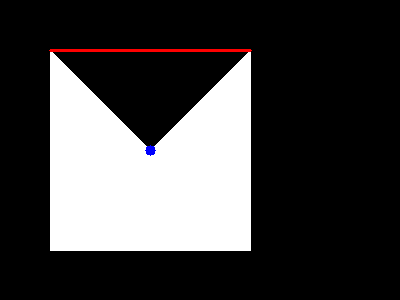
拓展：凸缺陷距离是定点数
原书只说"近似距离"。实测该字段按 256 倍定点数编码（d = 25600 → 100.00 像素），取像素距离要除以 256。原书例子里指缝深度分别为 21878/256 ≈ 85.5、20327/256 ≈ 79.4 像素等。
12.5.3 几何学测试#
1. 测试轮廓是否是凸形的
retval：布尔值，True 表示轮廓是凸形的。contour：要判断的轮廓。
【例 12.23】分别判断凸包与逼近多边形。
# ===== 例 12.23 isContourConvex =====
import cv2
o = hand_img() # 原书：hand.bmp
cv2.imshow("original", o)
gray = cv2.cvtColor(o, cv2.COLOR_BGR2GRAY)
ret, binary = cv2.threshold(gray, 127, 255, cv2.THRESH_BINARY)
contours, hierarchy = cv2.findContours(binary, cv2.RETR_LIST,
cv2.CHAIN_APPROX_SIMPLE)
# ---------- 凸包 ----------
image1 = o.copy()
hull = cv2.convexHull(contours[0])
cv2.polylines(image1, [hull], True, (0, 255, 0), 2)
print("使用函数cv2.convexHull()构造的多边形是否是凸形的：",
cv2.isContourConvex(hull))
cv2.imshow("result1", image1)
# ---------- 逼近多边形 ----------
image2 = o.copy()
epsilon = 0.01*cv2.arcLength(contours[0], True)
approx = cv2.approxPolyDP(contours[0], epsilon, True)
image2 = cv2.drawContours(image2, [approx], 0, (0, 0, 255), 2)
print("使用函数cv2.approxPolyDP()构造的多边形是否是凸形的：",
cv2.isContourConvex(approx))
cv2.imshow("result2", image2)
cv2.waitKey()
cv2.destroyAllWindows()
实测输出：
凸包必然是凸的（True）；epsilon=1% 周长的逼近多边形保留了 5 个顶点，凹口还没被"填平"，所以不是凸形（False）。
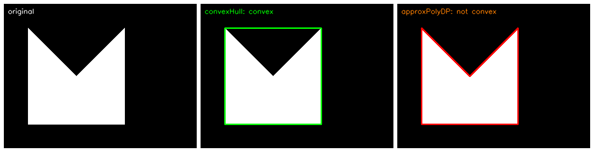
2. 点到轮廓的距离
contour：轮廓。pt：待判定的点。measureDist：布尔值，距离判定方式。- True：计算点到轮廓的最短距离。点在轮廓外部返回负数，轮廓上返回 0，内部返回正数；
- False：不计算距离，只返回 -1、0、1 三者之一，表示外部、轮廓上、内部。
retval：距离或位置关系。
【例 12.24】measureDist=True：计算三个点到轮廓的最短距离。
# ===== 例 12.24 测距离 =====
import cv2
o = hand_img() # 原书：cs.bmp
cv2.imshow("original", o)
gray = cv2.cvtColor(o, cv2.COLOR_BGR2GRAY)
ret, binary = cv2.threshold(gray, 127, 255, cv2.THRESH_BINARY)
contours, hierarchy = cv2.findContours(binary, cv2.RETR_LIST,
cv2.CHAIN_APPROX_SIMPLE)
hull = cv2.convexHull(contours[0])
distA = cv2.pointPolygonTest(hull, (100, 200), True) # 内部点 A
print("distA=", distA)
distB = cv2.pointPolygonTest(hull, (300, 150), True) # 外部点 B
print("distB=", distB)
distC = cv2.pointPolygonTest(hull, (50, 50), True) # 顶点上的点 C
print("distC=", distC)
cv2.waitKey()
cv2.destroyAllWindows()
实测输出：
A 在轮廓内部（到最近边界 50 像素），返回正数；B 在外部 50 像素，返回负数；C 恰在顶点上，返回 0（打印成 -0.0 是浮点表示问题）。距离数值可以手算：凸包边界分别是 x=50、x=250、y=50、y=250，点 (100,200) 到最近的边界（x=50 或 y=250）恰好 50。
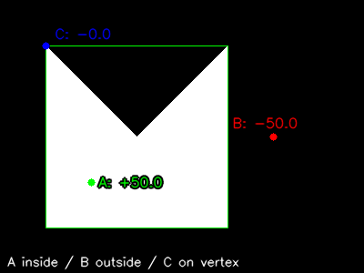
【例 12.25】measureDist=False：只判断位置关系。
# ===== 例 12.25 只判位置 =====
import cv2
o = hand_img() # 原书：cs.bmp
gray = cv2.cvtColor(o, cv2.COLOR_BGR2GRAY)
ret, binary = cv2.threshold(gray, 127, 255, cv2.THRESH_BINARY)
contours, hierarchy = cv2.findContours(binary, cv2.RETR_LIST,
cv2.CHAIN_APPROX_SIMPLE)
hull = cv2.convexHull(contours[0])
print("内部点A=", cv2.pointPolygonTest(hull, (100, 200), False))
print("外部点B=", cv2.pointPolygonTest(hull, (300, 150), False))
print("边上点C=", cv2.pointPolygonTest(hull, (50, 50), False))
实测输出：
不需要具体距离时用 False 更快。
拓展：凹点对凸包测距是正数
凸包已经把凹口"填平"了：凹点 (150,150) 位于凸包四边形内部，实测 pointPolygonTest(hull, (150,150), True) 返回 +100.0（到边 y=50 的距离）；凸包正右方的点 (350,150) 返回 −100.0（350−250）。pointPolygonTest 只对传入的那个多边形负责，与原轮廓无关。
12.6 利用形状场景算法比较轮廓#
用矩比较形状很有效，但还有更有效的方法。从 OpenCV 3 开始，专有模块 shape 提供形状场景算法（shape scene），以"距离"作为形状比较的度量：两个形状一模一样时距离为零，差异越大距离越大。
12.6.1 计算形状场景距离#
OpenCV 提供函数 cv2.createShapeContextDistanceExtractor()，其内部采用"形状上下文算法"（shape contexts）：在每个点上附加一个"形状上下文"描述符，捕获其余点相对于它的分布特征，从而提供全局鉴别特征。理论出处是 Belongie 等人 2002 年发表在 IEEE Transactions on Pattern Analysis & Machine Intelligence 上的论文 Shape Matching and Object Recognition Using Shape Contexts。
retval = cv2.createShapeContextDistanceExtractor(
[, nAngularBins[, nRadialBins[, innerRadius[, outerRadius
[, iterations[, comparer[, transformer]]]]]]]])
retval：返回的距离提取算子，再通过computeDistance()计算两个轮廓的距离：
参数均为可选：
nAngularBins：形状上下文描述符的角容器数量；nRadialBins：径向容器数量；innerRadius、outerRadius：描述符的内、外半径；iterations：迭代次数；comparer：直方图代价提取算子；transformer：形状变换参数。
【例 12.26】计算三组对象的形状场景距离。
# ===== 例 12.26 形状场景距离 =====
import cv2
gray1 = cv2.cvtColor(quad_img((100, 100)), cv2.COLOR_BGR2GRAY) # 原书 cs.bmp
gray2 = cv2.cvtColor(quad_img((130, 140)), cv2.COLOR_BGR2GRAY) # 原书 cs3.bmp（移位后的自身）
gray3 = cv2.cvtColor(circ_img(), cv2.COLOR_BGR2GRAY) # 原书 hand.bmp（不相似对象）
ret, b1 = cv2.threshold(gray1, 127, 255, cv2.THRESH_BINARY)
ret, b2 = cv2.threshold(gray2, 127, 255, cv2.THRESH_BINARY)
ret, b3 = cv2.threshold(gray3, 127, 255, cv2.THRESH_BINARY)
contours1, hierarchy = cv2.findContours(b1, cv2.RETR_LIST,
cv2.CHAIN_APPROX_SIMPLE)
contours2, hierarchy = cv2.findContours(b2, cv2.RETR_LIST,
cv2.CHAIN_APPROX_SIMPLE)
contours3, hierarchy = cv2.findContours(b3, cv2.RETR_LIST,
cv2.CHAIN_APPROX_SIMPLE)
cnt1, cnt2, cnt3 = contours1[0], contours2[0], contours3[0]
# ---------- 构造距离提取算子并计算 ----------
sd = cv2.createShapeContextDistanceExtractor()
print("与自身的距离d1=", sd.computeDistance(cnt1, cnt1))
print("与移位后自身的距离d2=", sd.computeDistance(cnt1, cnt2))
print("与不相似对象的距离d3=", sd.computeDistance(cnt1, cnt3))
实测输出：
相同对象距离为零，相似对象距离接近零，不相似对象距离明显更大。原书在其素材上的实测为 0、0.791、2.752——具体数值与对象、点数有关，规律一致。
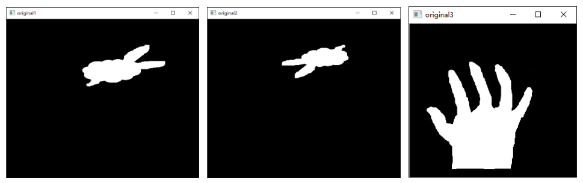
12.6.2 计算 Hausdorff 距离#
Hausdorff 距离的计算方法：
- 对图像 A 内的每个点，寻找其到图像 B 的最短距离，取这些最短距离的最大值作为直接距离 \(h(A,B)\)；
- 对图像 B 内的每个点，同样求到 A 的最短距离的最大值 \(h(B,A)\)；
- 取 \(h(A,B)\) 与 \(h(B,A)\) 中的较大者作为 Hausdorff 距离：
其中 \(\lVert \cdot \rVert\) 是点 a、b 的某种范数，通常是欧氏距离。
OpenCV 提供函数 cv2.createHausdorffDistanceExtractor()：
distanceFlag：距离标记（可选）。rankProp：0 到 1 之间的比例值（可选）。- 返回值同样是距离提取算子，用
computeDistance(contour1, contour2)计算距离。
【例 12.27】计算三组对象的 Hausdorff 距离。
# ===== 例 12.27 Hausdorff 距离 =====
import cv2
gray1 = cv2.cvtColor(quad_img((100, 100)), cv2.COLOR_BGR2GRAY) # 原书 cs.bmp
gray2 = cv2.cvtColor(quad_img((130, 140)), cv2.COLOR_BGR2GRAY) # 移位后的自身
gray3 = cv2.cvtColor(circ_img(), cv2.COLOR_BGR2GRAY) # 不相似对象
ret, b1 = cv2.threshold(gray1, 127, 255, cv2.THRESH_BINARY)
ret, b2 = cv2.threshold(gray2, 127, 255, cv2.THRESH_BINARY)
ret, b3 = cv2.threshold(gray3, 127, 255, cv2.THRESH_BINARY)
contours1, hierarchy = cv2.findContours(b1, cv2.RETR_LIST,
cv2.CHAIN_APPROX_SIMPLE)
contours2, hierarchy = cv2.findContours(b2, cv2.RETR_LIST,
cv2.CHAIN_APPROX_SIMPLE)
contours3, hierarchy = cv2.findContours(b3, cv2.RETR_LIST,
cv2.CHAIN_APPROX_SIMPLE)
cnt1, cnt2, cnt3 = contours1[0], contours2[0], contours3[0]
hd = cv2.createHausdorffDistanceExtractor()
print("与自身图像的Hausdorff距离d1=", hd.computeDistance(cnt1, cnt1))
print("与移位后自身的Hausdorff距离d2=", hd.computeDistance(cnt1, cnt2))
print("与不相似对象的Hausdorff距离d3=", hd.computeDistance(cnt1, cnt3))
实测输出：
与自身图像的Hausdorff距离d1= 0.0
与移位后自身的Hausdorff距离d2= 40.49691390991211
与不相似对象的Hausdorff距离d3= 336.74322509765625
与自身距离为零；移位 (30,140) 后的自身为 40.5（与位移量同量级）；不相似的圆则为 336.7。原书素材上的实测为 0、18.36、57.27，规律一致。
拓展：Hausdorff 距离不是不变量
与 Hu 矩、形状场景距离不同，Hausdorff 距离就是像素坐标下的最大最小距离，不具平移、缩放不变性——同一形状放大 2 倍或移远一点，距离立刻变大。用它比较形状前，需要先把对象对齐（定位、归一化尺寸），否则数值没有可比性。
12.7 轮廓的特征值#
轮廓自身的属性与轮廓所包围对象的特征对描述图像很有意义。本节的特征值都可以由前面学过的函数组合出来。
12.7.1 宽高比#
宽高比（aspect ratio）描述轮廓的"扁"的程度：
原书笔误：AspectRation
原书 12.7.1 节把该术语写作"AspectRation"，正确拼写是 AspectRatio。
【例 12.28】计算矩形轮廓的宽高比。
# ===== 例 12.28 宽高比 =====
import cv2
o = quad_img()
gray = cv2.cvtColor(o, cv2.COLOR_BGR2GRAY) # 原书用 100×60 的矩形轮廓 cc.bmp
ret, binary = cv2.threshold(gray, 127, 255, cv2.THRESH_BINARY)
contours, hierarchy = cv2.findContours(binary, cv2.RETR_LIST,
cv2.CHAIN_APPROX_SIMPLE)
x, y, w, h = cv2.boundingRect(contours[0])
cv2.rectangle(o, (x, y), (x+w, y+h), (255, 255, 255), 3)
aspectRatio = float(w)/h
print(aspectRatio)
对 12.1 节那个 100×60 的实心矩形轮廓实测：aspectRatio = 1.6667，即 \(100/60\)。原书素材的矩形轮廓实测约 2.15。
12.7.2 Extent#
Extent 是轮廓面积与矩形边界面积之比：
【例 12.29】计算轮廓面积与矩形边界面积之比。
# ===== 例 12.29 Extent =====
import cv2
o = quad_img()
gray = cv2.cvtColor(o, cv2.COLOR_BGR2GRAY)
ret, binary = cv2.threshold(gray, 127, 255, cv2.THRESH_BINARY)
contours, hierarchy = cv2.findContours(binary, cv2.RETR_LIST,
cv2.CHAIN_APPROX_SIMPLE)
x, y, w, h = cv2.boundingRect(contours[0])
cv2.drawContours(o, contours[0], -1, (0, 0, 255), 3)
cv2.rectangle(o, (x, y), (x+w, y+h), (255, 0, 0), 3)
rectArea = w*h # 矩形边界面积
cntArea = cv2.contourArea(contours[0]) # 轮廓面积
extend = float(cntArea)/rectArea
print(extend)
对 100×60 矩形轮廓实测：extend = 0.9735，即 \(5841 / (100 \times 60)\)——边界像素差的那一圈就是缺的 2.65%。
原书笔误：两处图注编号
原书图 12-34 的图注写作"【图 12.29】程序的运行结果"，应为"【例 12.29】"；图 12-37 的图注写作"【例 12.37】程序的运行结果"，应为"【例 12.32】"。
12.7.3 Solidity#
Solidity 是轮廓面积与凸包面积之比，衡量对象被自己的凸包"填满"的程度：
【例 12.30】计算轮廓面积与凸包面积之比。
# ===== 例 12.30 Solidity =====
import cv2
o = hand_img() # 原书：hand.bmp
cv2.imshow("original", o)
gray = cv2.cvtColor(o, cv2.COLOR_BGR2GRAY)
ret, binary = cv2.threshold(gray, 127, 255, cv2.THRESH_BINARY)
contours, hierarchy = cv2.findContours(binary, cv2.RETR_LIST,
cv2.CHAIN_APPROX_SIMPLE)
cv2.drawContours(o, contours[0], -1, (0, 0, 255), 3)
cntArea = cv2.contourArea(contours[0]) # 轮廓面积
hull = cv2.convexHull(contours[0])
hullArea = cv2.contourArea(hull) # 凸包面积
cv2.polylines(o, [hull], True, (0, 255, 0), 2)
solidity = float(cntArea)/hullArea
print(solidity)
cv2.imshow("result", o)
cv2.waitKey()
cv2.destroyAllWindows()
实测输出：
手算完全吻合：五边形面积 30000（200×200 的外框减去 10000 的凹口三角形），凸包是 200×200 的四边形面积 40000，比值 30000/40000 = 0.75。凸的方块该值为 1.0；原书的手掌素材约 0.675。
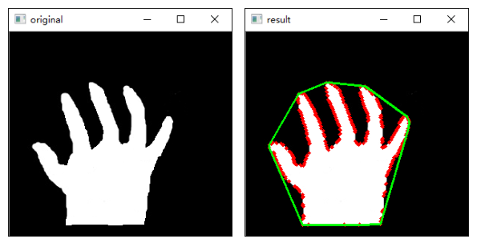
12.7.4 等效直径（Equivalent Diameter）#
等效直径是与轮廓面积相等的圆形的直径：
【例 12.31】计算等效直径并绘制等面积的圆。
# ===== 例 12.31 等效直径 =====
import cv2
import numpy as np
o = quad_img()
gray = cv2.cvtColor(o, cv2.COLOR_BGR2GRAY)
ret, binary = cv2.threshold(gray, 127, 255, cv2.THRESH_BINARY)
contours, hierarchy = cv2.findContours(binary, cv2.RETR_LIST,
cv2.CHAIN_APPROX_SIMPLE)
cntArea = cv2.contourArea(contours[0])
equiDiameter = np.sqrt(4*cntArea/np.pi) # sqrt(4×面积/π)
print(equiDiameter)
cv2.circle(o, (100, 100), int(equiDiameter/2), (0, 0, 255), 3) # 等面积的圆
cv2.imshow("result", o)
cv2.waitKey()
cv2.destroyAllWindows()
对 100×60 矩形轮廓实测：equiDiameter = 86.238，即 \(\sqrt{4 \times 5841 / \pi}\)，与手算一致。原书素材实测约 99.0。
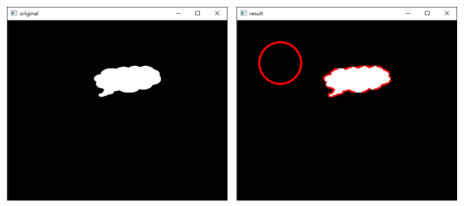
12.7.5 方向#
方向可以用最优拟合椭圆的旋转角度描述。cv2.fitEllipse() 支持三个返回值形式：
(x, y)：椭圆中心点；(MA, ma)：椭圆水平方向轴和垂直方向轴的长度；angle：旋转角度。
【例 12.32】观察两种返回值形式。
# ===== 例 12.32 方向 =====
import cv2
o = quad_img()
cv2.imshow("original", o)
gray = cv2.cvtColor(o, cv2.COLOR_BGR2GRAY)
ret, binary = cv2.threshold(gray, 127, 255, cv2.THRESH_BINARY)
contours, hierarchy = cv2.findContours(binary, cv2.RETR_LIST,
cv2.CHAIN_APPROX_SIMPLE)
ellipse = cv2.fitEllipse(contours[0]) # 单个返回值
retval = cv2.fitEllipse(contours[0])
print("单个返回值形式：\n", retval)
(x, y), (MA, ma), angle = cv2.fitEllipse(contours[0]) # 三个返回值
print("(x,y)=", (x, y))
print("(MA,ma)=", (MA, ma))
print("angle=", angle)
cv2.ellipse(o, ellipse, (0, 0, 255), 2)
cv2.imshow("result", o)
cv2.waitKey()
cv2.destroyAllWindows()
实测输出：
单个返回值形式：
((140.06163024902344, 94.97840118408203), (73.40412902832031, 128.23939514160156), 105.84986114501953)
(x,y)= (140.06163024902344, 94.97840118408203)
(MA,ma)= (73.40412902832031, 128.23939514160156)
angle= 105.84986114501953
两种形式返回的值相同，拆开后能直接拿到中心、轴长、角度三组信息。
12.7.6 掩模和像素点#
把 drawContours 的 thickness 设为 -1 就能得到对象的实心轮廓，即掩模；空心轮廓（thickness>0）与实心轮廓各自包含不同的像素点集。获取轮廓像素点的位置有两种方式。
方式一：Numpy 函数。 numpy.nonzero() 找出数组内非零元素的位置，但把行、列分开返回；用 numpy.transpose() 处理后得到逐点的坐标。
原书表述不准：transpose 后是（行, 列）不是 (x, y)
原书说"使用 numpy.transpose() 处理返回值，得到这些点的 (x, y) 形式的坐标"。实测 np.transpose(np.nonzero(a)) 得到的是**（行号, 列号）**即 (y, x) 顺序；真正返回 (列号, 行号) 即 (x, y) 的是 OpenCV 的 cv2.findNonZero()（本节方式二）。两组输出互为转置，对照原书例 12.34 与例 12.36 的打印即可确认。
【例 12.33 / 12.35】数组内非零值位置的两种获取方式。
# ===== 例 12.33/12.35 非零值位置：Numpy 与 OpenCV =====
import cv2
import numpy as np
np.random.seed(0) # 固定随机种子便于复现
a = np.zeros((5, 5), dtype=np.uint8)
for times in range(10): # 随机把 10 个位置置 1
i = np.random.randint(0, 5)
j = np.random.randint(0, 5)
a[i, j] = 1 # 重复位置只算一个非零点
print("a=\n", a)
loc_np = np.transpose(np.nonzero(a)) # Numpy：(行, 列)
print("a 内非零值的位置（行,列）:\n", loc_np)
loc_cv = cv2.findNonZero(a) # OpenCV：(列, 行)
print("a 内非零值的位置（列,行）:\n", loc_cv)
实测输出：
a=
[[0 1 0 0 1]
[1 0 0 0 1]
[0 1 0 0 0]
[0 1 1 1 0]
[1 0 0 0 0]]
a 内非零值的位置（行,列）:
[[0 1]
[0 4]
[1 0]
[1 4]
[2 1]
[3 1]
[3 2]
[3 3]
[4 0]]
a 内非零值的位置（列,行）:
[[[1 0]]
[[4 0]]
[[0 1]]
[[4 1]]
[[1 2]]
[[1 3]]
[[2 3]]
[[3 3]]
[[0 4]]]
同一个非零点，Numpy 给 (0,1)（第 0 行第 1 列），OpenCV 给 (1,0)（第 1 列第 0 行）——两种函数的坐标顺序正好相反。
【例 12.34 / 12.36】获取图像轮廓的像素点位置。
# ===== 例 12.34/12.36 轮廓像素点 =====
import cv2
import numpy as np
o = quad_img() # 原书：cc.bmp
gray = cv2.cvtColor(o, cv2.COLOR_BGR2GRAY)
ret, binary = cv2.threshold(gray, 127, 255, cv2.THRESH_BINARY)
contours, hierarchy = cv2.findContours(binary, cv2.RETR_LIST,
cv2.CHAIN_APPROX_SIMPLE)
cnt = contours[0]
# ---------- 空心轮廓 ----------
mask1 = np.zeros(gray.shape, np.uint8)
cv2.drawContours(mask1, [cnt], 0, 255, 2) # thickness=2：空心
pp1 = np.transpose(np.nonzero(mask1)) # Numpy 方式：(行, 列)
pp1c = cv2.findNonZero(mask1) # OpenCV 方式：(列, 行)
print("空心轮廓 np.nonzero 形状 =", pp1.shape, " 前 3 个:", pp1[:3].tolist())
print("空心轮廓 findNonZero 形状 =", pp1c.shape, " 前 3 个:", pp1c.reshape(-1, 2)[:3].tolist())
# ---------- 实心轮廓 ----------
mask2 = np.zeros(gray.shape, np.uint8)
cv2.drawContours(mask2, [cnt], 0, 255, -1) # thickness=-1：实心
pp2 = np.transpose(np.nonzero(mask2))
print("实心轮廓形状 =", pp2.shape)
cv2.imshow("mask1", mask1)
cv2.imshow("mask2", mask2)
cv2.waitKey()
cv2.destroyAllWindows()
实测输出（方块轮廓）：
空心轮廓 np.nonzero 形状 = (836, 2) 前 3 个: [[129, 25], [129, 26], [129, 27]]
空心轮廓 findNonZero 形状 = (836, 1, 2) 前 3 个: [[25, 129], [26, 129], [27, 129]]
实心轮廓形状 = (5041, 2)
- 空心轮廓 836 个点，实心轮廓 5041 = 71×71 个点（整块像素）；
np.nonzero返回形状(N, 2)、顺序（行, 列）；findNonZero返回形状(N, 1, 2)、顺序（列, 行）。
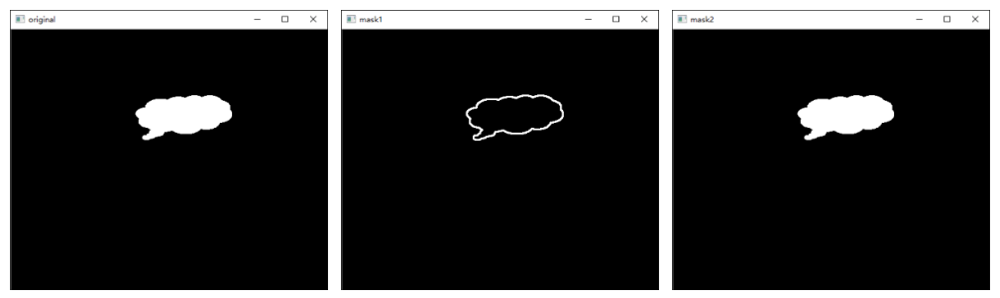
12.7.7 最大值和最小值及它们的位置#
imgray：单通道图像。mask：掩模，用来限定只统计掩模指定区域。min_val、max_val：最小值、最大值；min_loc、max_loc：它们的位置。
【例 12.37】在掩模区域内查最值。
# ===== 例 12.37 minMaxLoc =====
import cv2
import numpy as np
g = np.zeros((300, 400), np.uint8) # 原书：ct.png（含字母的图）
cv2.rectangle(g, (20, 30), (119, 89), 100, -1) # 灰度 100 的矩形
cv2.circle(g, (280, 120), 50, 200, -1) # 灰度 200 的圆
g[31, 21] = 10 # 矩形内人为放置最暗点
g[88, 118] = 250 # 矩形内人为放置最亮点
contours, hierarchy = cv2.findContours(g, cv2.RETR_EXTERNAL,
cv2.CHAIN_APPROX_SIMPLE)
cnt = [c for c in contours if cv2.boundingRect(c) == (20, 30, 100, 60)][0]
mask = np.zeros(g.shape, np.uint8) # 掩模必须是单通道
mask = cv2.drawContours(mask, [cnt], -1, 255, -1) # 实心轮廓当掩模
minVal, maxVal, minLoc, maxLoc = cv2.minMaxLoc(g, mask=mask)
print("minVal=", minVal)
print("maxVal=", maxVal)
print("minLoc=", minLoc)
print("maxLoc=", maxLoc)
实测输出：
最暗 10、最亮 250 都被找到。位置 (21, 31) 是 (x, y) 即（列, 行） 格式——对应我们写入的 g[31, 21] = 10（第 31 行第 21 列）。若想获取彩色图像的最值，需拆出各通道分别计算。
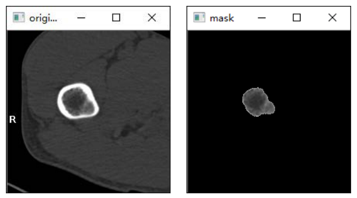
12.7.8 平均颜色及平均灰度#
im：原图像。mask：掩模（必须是单通道）。mean_val：平均值，按 B、G、R、A 四个通道各返回一个值。
【例 12.38】计算对象的平均灰度。
# ===== 例 12.38 mean =====
import cv2
import numpy as np
g = np.zeros((300, 400), np.uint8) # 同例 12.37 的灰度图
cv2.rectangle(g, (20, 30), (119, 89), 100, -1)
cv2.circle(g, (280, 120), 50, 200, -1)
g[31, 21] = 10
g[88, 118] = 250
contours, hierarchy = cv2.findContours(g, cv2.RETR_EXTERNAL,
cv2.CHAIN_APPROX_SIMPLE)
cnt = [c for c in contours if cv2.boundingRect(c) == (20, 30, 100, 60)][0]
mask = np.zeros(g.shape, np.uint8) # mean 的掩模必须是单通道
cv2.drawContours(mask, [cnt], 0, (255, 255, 255), -1)
meanVal = cv2.mean(g, mask=mask)
print("meanVal=\n", meanVal)
meanValColor = cv2.mean(cv2.cvtColor(g, cv2.COLOR_GRAY2BGR), mask=mask)
print("meanValColor=\n", meanValColor)
实测输出：
meanVal=
(100.00999999999999, 0.0, 0.0, 0.0)
meanValColor=
(100.00999999999999, 100.00999999999999, 100.00999999999999, 0.0)
- 灰度图只有第 1 个值有意义，其余三个通道为 0；
- 彩色图返回 B、G、R、A 四个均值，本例三通道相同所以三个值一样，alpha 通道为 0；
- 手算核对：掩模内 6000 个像素，5998 个是 100、一个 10、一个 250，均值 \((5998 \times 100 + 10 + 250)/6000 = 100.01\)，与实测一致。
实心轮廓掩模怎样"圈出"统计区域，可对照下面的实跑图：minMaxLoc 的最值位置与 mean 的均值都来自掩模保留的那块感兴趣区域。
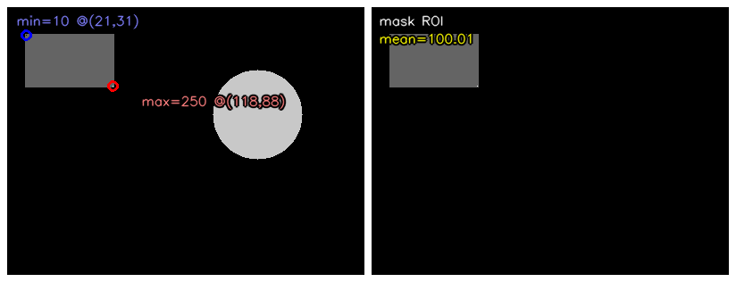
12.7.9 极点#
获取对象最左、最右、最上、最下四个极值点，用 Numpy 的 argmin/argmax 沿轮廓点集的某一维查找：
leftmost = tuple(cnt[cnt[:, :, 0].argmin()][0]) # x 最小的点
rightmost = tuple(cnt[cnt[:, :, 0].argmax()][0]) # x 最大的点
topmost = tuple(cnt[cnt[:, :, 1].argmin()][0]) # y 最小的点
bottommost = tuple(cnt[cnt[:, :, 1].argmax()][0]) # y 最大的点
【例 12.39】计算并标注极值点。
# ===== 例 12.39 极点 =====
import cv2
import numpy as np
o = circ_img() # 原书：cs.bmp
gray = cv2.cvtColor(o, cv2.COLOR_BGR2GRAY)
ret, binary = cv2.threshold(gray, 127, 255, cv2.THRESH_BINARY)
contours, hierarchy = cv2.findContours(binary, cv2.RETR_LIST,
cv2.CHAIN_APPROX_SIMPLE)
cnt = contours[0]
leftmost = tuple(cnt[cnt[:, :, 0].argmin()][0].tolist())
rightmost = tuple(cnt[cnt[:, :, 0].argmax()][0].tolist())
topmost = tuple(cnt[cnt[:, :, 1].argmin()][0].tolist())
bottommost = tuple(cnt[cnt[:, :, 1].argmax()][0].tolist())
print("leftmost=", leftmost)
print("rightmost=", rightmost)
print("topmost=", topmost)
print("bottommost=", bottommost)
font = cv2.FONT_HERSHEY_SIMPLEX
cv2.putText(o, 'A', leftmost, font, 1, (0, 0, 255), 2) # 标注四个极点
cv2.putText(o, 'B', rightmost, font, 1, (0, 0, 255), 2)
cv2.putText(o, 'C', topmost, font, 1, (0, 0, 255), 2)
cv2.putText(o, 'D', bottommost, font, 1, (0, 0, 255), 2)
cv2.imshow("result", o)
cv2.waitKey()
cv2.destroyAllWindows()
实测输出（圆心 (280,120)、半径 50 的圆）：
四个极点正好是 \(280 \pm 50\)、\(120 \pm 50\)，手算吻合。同一个方向上有多个候选时，argmin/argmax 返回第一个出现的点。
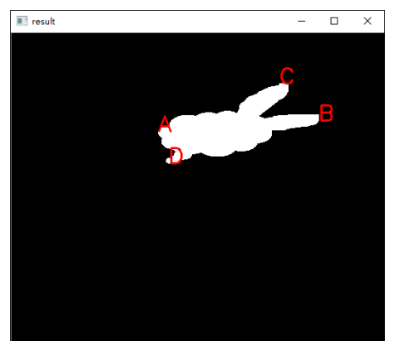
坑与陷阱#
8 个容易踩的坑
- findContours 的返回值数量跟版本走：OpenCV 4.x 只返回
contours, hierarchy两个值；照原书 3.x 写法解包三个值会报ValueError: too many values to unpack (expected 2)。另外实测 4.13 返回的容器是tuple（老版本是list），按序列访问不受影响。 - 黑底白对象、8 位单通道：
findContours从黑色背景中找白色对象，对象是白、背景是黑；输入必须是 8 位单通道二值图。拿彩色图或"黑对象白背景"的图去找，要么报错要么一无所获。 - drawContours 原地修改：它直接在传入的 image 上画并返回同一幅图。要在原图上叠加多种结果时先
o.copy()，否则第二次画时原图已经被涂掉了（例 12.19 每轮循环都要重新 copy）。 - 面积周长是"边界多边形"的，不是像素计数：100×60 的实心矩形，
contourArea/m00是 5841（= 99×59）而非 6000；arcLength是 316（= 2×(99+59)）。拿像素个数去对数会差一圈边界；圆的面积 3754 与 \(\pi r^2 = 3848\) 的差来自多边形逼近。 - convexityDefects 的两个硬性约定：凸包参数必须用
cv2.convexHull(cnt, returnPoints=False)生成（索引形式）；返回值的 [起点, 终点, 最远点] 是轮廓点索引而非坐标，要回到cnt[i][0]取坐标，距离字段还要除以 256。 - fitEllipse 至少要 5 个点：
CHAIN_APPROX_SIMPLE压缩后的直边矩形轮廓只剩 4 个点，直接报There should be at least 5 points to fit the ellipse。改用CHAIN_APPROX_NONE的完整轮廓。 - np.int0 已经不存在：NumPy 2.0 删除了
np.int0，boxPoints的浮点角点取整用np.round(points).astype(np.int32)。minAreaRect返回中心、宽高、角度全是 float，画图前必须转整。 - 轮廓编号不按空间顺序：实测"下方的方块"是
contours[0]、"上方的圆"是contours[2]，且同一幅图换一个 mode 编号还会变。处理特定对象前先打印每条轮廓的boundingRect确认索引，不要写死contours[0]。
速览#
- 轮廓是把不连续的边缘连接成的整体。
cv2.findContours(binary, mode, method)在 8 位单通道、黑底白对象的二值图上查找轮廓，OpenCV 4.x 返回contours, hierarchy两个值。 contours[i]是第 i 条轮廓的点集（形状(N,1,2)，坐标 [列 行]）；编号由内部扫描决定，不按空间位置排列。hierarchy形状(1, N, 4)，每行[Next, Previous, First_Child, Parent]，没有的关系记 -1；层次由 mode 决定：RETR_EXTERNAL只检外轮廓、RETR_LIST不分层、RETR_CCOMP固定两层、RETR_TREE完整树。- method 控制点数：
CHAIN_APPROX_NONE存全部边界点，CHAIN_APPROX_SIMPLE只留方向端点（矩形 4 点），另有 TC89_L1/KCOS 两种链近似。 cv2.drawContours(img, cnts, idx, color, thickness)原地绘制；idx=-1画全部；thickness=-1画实心轮廓，实心轮廓 +bitwise_and即可提取前景。cv2.moments()返回 24 个字段：10 个空间矩、7 个中心矩、7 个归一化中心矩；m00= 面积，与cv2.contourArea逐位相等；中心矩平移不变，归一化中心矩再加缩放不变。cv2.arcLength(cnt, True)求周长。面积周长按边界像素多边形计算：100×60 矩形 = 5841 与 316，不是 6000 与 318。- Hu 矩是归一化中心矩的线性组合（7 个值），平移、缩放、旋转后近似不变；
cv2.matchShapes(c1, c2, 1, 0)越小越相似，同一对象为 0。 - 拟合全家桶：
boundingRect（正置框，4 返回值 x,y,w,h）、minAreaRect+boxPoints（旋转最小框）、minEnclosingCircle、fitEllipse（至少 5 点）、fitLine、minEnclosingTriangle、approxPolyDP（DP 算法，epsilon 常取周长百分比）。 - 凸包
convexHull(cnt, returnPoints=False)喂给convexityDefects找凹缺陷（距离除以 256）；isContourConvex判凸形；pointPolygonTest判点与轮廓关系（True 返回带符号距离，False 返回 1/0/-1）。特征值：宽高比 w/h、Extent=轮廓面积/矩形面积、Solidity=轮廓面积/凸包面积、等效直径 \(\sqrt{4 \times \text{面积}/\pi}\)；实心轮廓当掩模配minMaxLoc/mean取区域最值与均值；argmin/argmax找四个极点。
术语速查#
| 英文 / 函数 | 中文 | 一句话 |
|---|---|---|
| contour | 轮廓 | 边缘连接成的整体点集，cv2.findContours 在二值图上查找 |
| hierarchy | 层次（拓扑信息） | 每条轮廓的 [Next, Previous, First_Child, Parent] |
| retrieval mode | 检索模式 | RETR_EXTERNAL / LIST / CCOMP / TREE 四种 |
| approximation method | 近似方法 | CHAIN_APPROX_NONE / SIMPLE / TC89_L1 / TC89_KCOS |
| spatial moments | 空间矩 | m00～m03 系列，m00 即面积 |
| central moments | 中心矩 | mu 系列，减去均值获得平移不变性 |
| normalized central moments | 归一化中心矩 | nu 系列，再除以尺寸获得缩放不变性 |
| Hu moments | Hu 矩 | 归一化中心矩的 7 个线性组合，旋转缩放平移不变 |
| shape matching | 形状匹配 | cv2.matchShapes 比较 Hu 矩，返回值越小越相似 |
| bounding rectangle | 矩形包围框 | cv2.boundingRect，边平行于坐标轴的正置外框 |
| min-area rectangle | 最小包围矩形框 | cv2.minAreaRect，面积最小的旋转矩形，boxPoints 转角点 |
| minimum enclosing circle | 最小包围圆形 | cv2.minEnclosingCircle，迭代求面积最小外接圆 |
| best-fit ellipse | 最优拟合椭圆 | cv2.fitEllipse，返回中心、轴长、旋转角 |
| best-fit line | 最优拟合直线 | cv2.fitLine，按 distType 最小化距离 |
| minimum enclosing triangle | 最小外包三角形 | cv2.minEnclosingTriangle，返回面积与三顶点 |
| approximating polygon | 逼近多边形 | cv2.approxPolyDP，DP 算法反复加入最远点简化轮廓 |
| convex hull | 凸包 | cv2.convexHull，完全包含轮廓的最外层凸多边形 |
| convexity defect | 凸缺陷 | cv2.convexityDefects，凸包与轮廓间的凹陷 |
| point-in-polygon test | 点与轮廓关系测试 | cv2.pointPolygonTest，返回带符号距离或 1/0/-1 |
| shape context | 形状上下文 | 点分布描述符，createShapeContextDistanceExtractor 算距离 |
| Hausdorff distance | Hausdorff 距离 | 双向"最近距离的最大值"，不是不变量 |
| aspect ratio | 宽高比 | boundingRect 的 w/h |
| extent | 轮廓面积与边界矩形面积之比 | 衡量对象填满包围框的程度 |
| solidity | 轮廓面积与凸包面积之比 | 衡量对象被凸包填满的程度 |
| equivalent diameter | 等效直径 | 与轮廓等面积的圆的直径，sqrt(4·面积/π) |